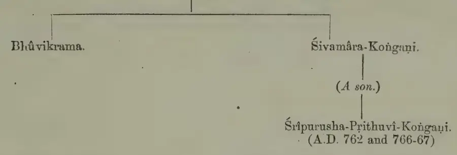
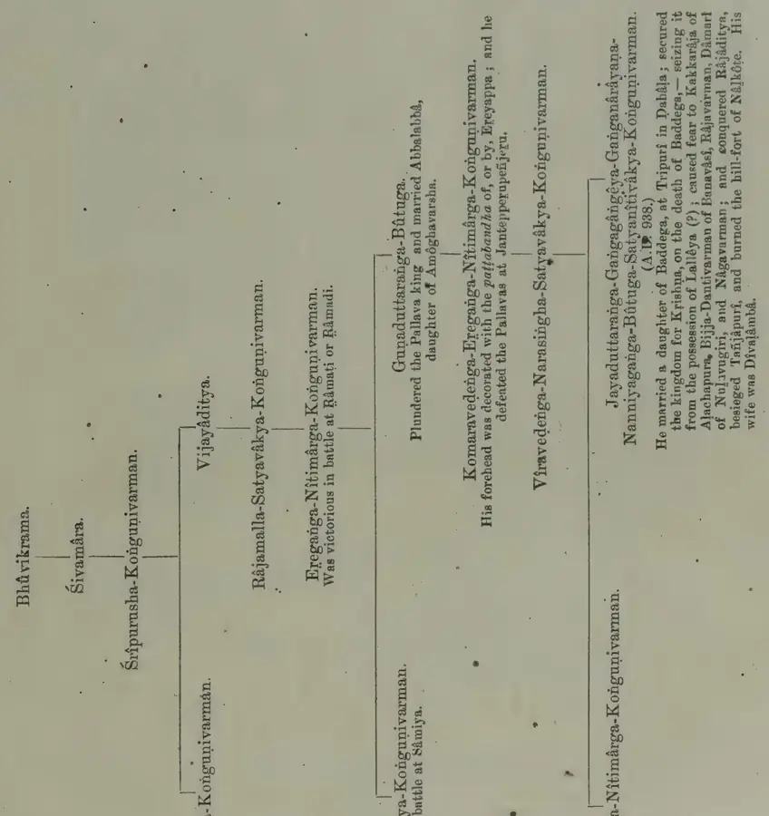
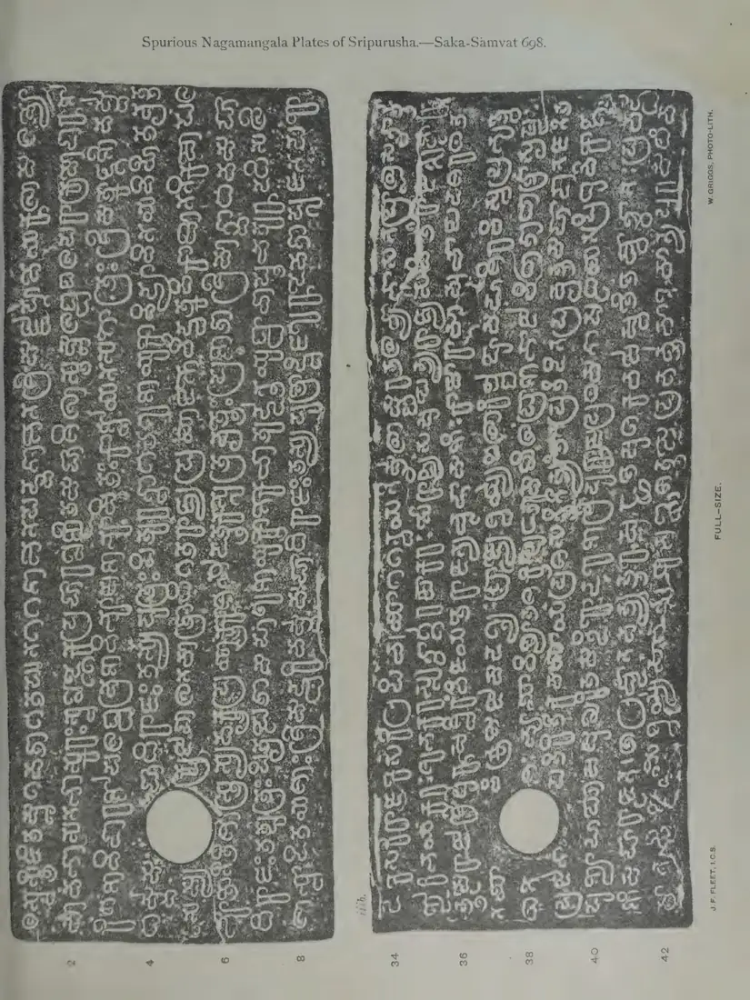
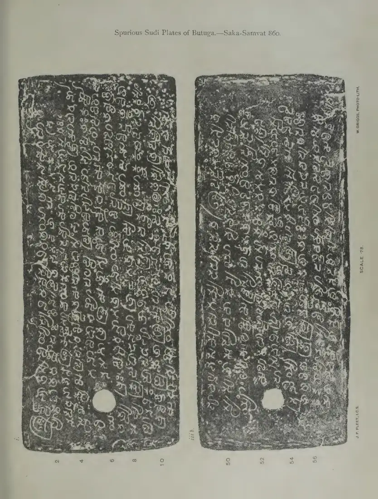
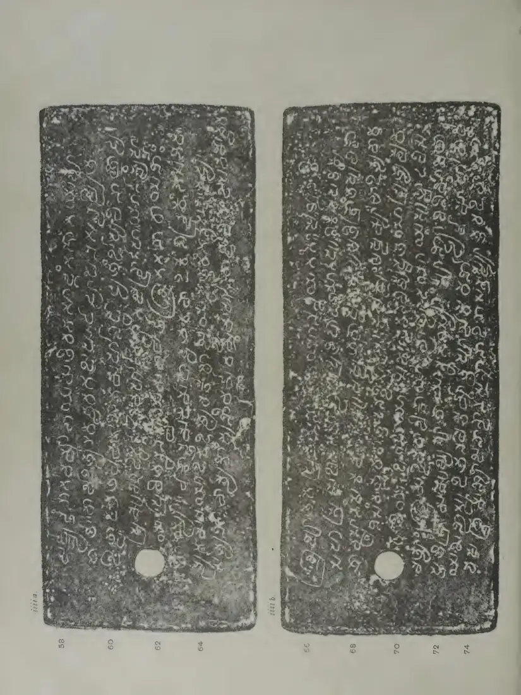

Spurious Sûḍi plates, purporting to have been issued by Bûtuga in Śaka-Saṁvat 860
No. 25.— SPURIOUS SUDI COPPER-PLATE GRANT PURPORTING TO HAVE
BEEN ISSUED BY BUTUGA IN SAKA-SAMVAT 860.
By J. F. FLEET, I.C.S., PH.D., C.I.E.
This inscription, which is now published for the first time, came to my notice in April, 1892, when I obtained the original plates, for examination, from Îrayya bin Uddânayya Muraḍimatha, a resident of Sûdi in the Rôn tâlukâ, Dhârwâr district.
The plates are five in number, each measuring about 98/8" by 4". The edges of them were fashioned slightly thicker than the inscribed surfaces, so as to serve as rims to protect the writing; and, though the plates are in many places a good deal corroded by rust, there are but very few passages in which the text cannot be made out quite satisfactorily.— The ring on which the plates are strung, is about 9/16" thick, and circular in shape, about 38/8" in diameter. It had not been cut, when the grant came into my hands. The surface of the seal in which the ends of the ring are secured, is slightly oval, about 18/8" by 18/8". It has, in high relief on a slightly countersunk surface, an elephant, standing to the proper right, with its trunk hanging down.— The weight of the five plates is 188 tolas; and of the ring and seal, 238/8 tolas: total, 2118/8 tolas.— The characters belong to what is usually known as the Old-Kanarese alphabet. The average size of the letters is about 3/16". The engraving is fairly good: but it is not particularly
1 Metre: Gîti.— In the third Pâda of this verse one or two syllables are missing. I would suggest reading achyuta-vihitam̄ bhûmêr=.
2 Metre of verses 110-115: Ślôka (Anushṭubh).
3 [Read abhâṇin=mṛidu-?— E. H.]
4 Read shashṭim̄ varsha-. 5 Metre: Śâlinî.
deep; and so the letters do not show through on the reverse sides of the plates. The interiors of them shew, as usual, marks of the working of the engraver's tool, almost throughout. It seems unnecessary to lithograph the whole record; but, as a specimen, I give plates i., iii. b., and iv. a and b.—Except for the use of a few Kanarese forms and words, especially in lines 77, 78, the language is Sanskrit. In addition to two of the customary benedictive and imprecatory verses in lines 80 to 82, there are verses in lines 48 to 64 and 83, 84.—The orthography presents nothing calling for remark.
The inscription purports to be a record of that Western Gaṅga prince Bûtuga, who, according to the Âtakûr inscription (Epigraphia Indica, Vol. II. p. 167), slew the Chôla king Râjâditya, in the war between the latter and the Râshtrakûta king Krishna III., in or just before A. D. 949-50. And the object of it is to record a grant of land, which he is supposed to have made, to a Jain temple which his wife Divalâmbâ had founded at Sûndî, i.e. Sûdi. The record, however, is spurious.
The date on which the grant purports to have been made, is Sunday, the eighth tithi of the bright fortnight of the month Kârttika of the Vikârin samvatsara, Śaka-Samvat 860 expired. The details, however, do not work out correctly. By the mean-sign system of the cycle, by which alone Vikârin can be connected with the given year, the samvatsara commenced on the 19th November, A.D. 937, in Śaka-Samvat 860 current, and ended on the 15th November, A.D 938, in Śaka-Samvat 861 current (860 expired). During this period, the month Kârttika fell in A.D. 938; and the given tithi ended on Thursday, 4th October, A.D. 938, at about 49 ghaṭis, 45 palas,= 19 hrs. 54 min., after mean sunrise (for Bombay). By the southern luni-solar system, Vikârin coincided with Śaka-Samvat 861 expired or 862 current: but, even if it be assumed that the record contains a mistake in respect of the year, no better result can be obtained; for, in Śaka-Samvat 862 current the given tithi began on Tuesday, 22nd October, A.D. 939, at about 30 gh. 25 p.,= 12 hrs. 10 min.
This grant belongs to a series of spurious records of a family or dynasty the members of which may, for the sake of convenience, be appropriately called the Western Gaṅgas, or the Gaṅgas of Gaṅgavâdi,—a province which lay principally in what is now the Mysore territory. These records have been mistakenly accepted by Mr. Rice as genuine. And it is most unfortunate that this has happened; for the supposed facts and dates that are stated in them, permeate and vitiate almost everything that he has written in connection with the period to which they purport to belong. I have before now indicated the true nature of these records, and some of the reasons for stamping them as spurious.1 Mr. Rice, however, has remained unconvinced. And I take this opportunity of stating the case more fully, and in a manner which was not possible when I wrote about it twelve years ago,— in the hope of being able to convert him at last, and with the object of at any rate preventing others, who may be working at the ancient history of India without reading the original documents for themselves, from falling into the same errors, and from being misled by such of his published statements as are based on these records.
Excluding the present grant, which I shall notice again further on, we have now nine of these spurious records, in print more or less, as follows:—
(1) The Tanjore grant of Arivarman, i.e. Harivarman, dated in the Prabhava samvatsara, Śaka-Samvat 169 da expired, with details falling in A.D. 248; published by myself, Ind. Ant. Vol. VIII. p. 212, a lithograph.
(2) The Harihanant of an unnamed son of Vishnugôpa,—who is, I suppose intended to be Mâdhavail I.—dated in the Sâdhâraṇa samvatsara, Śaka-Samvat 272 (expired),
1 See, e.g., Ind. Ant. Vol. XII. p. 111.—My present remarks, of course, entirely supersede all that I have previously written on this subject.
with details falling in A.D. 351; published by Mr. Rice, Ind. Ant. Vol. VII. p. 173, with a lithograph: the translation is also given in his Mysore Inscriptions, p. 293.
(3) The Mallohalli grant of Avinita-Koṅgani, dated in the twenty-ninth year of his reign, in the Jaya samvatsara, which is taken by Mr. Rice to be Śaka-Samvat 377 current (A.D. 454-55); published by Mr. Rice, Ind. Ant. Vol. V. p. 136, with a lithograph: the translation is also given in his Mysore Inscriptions, p. 289.
(4) The Merkara grant of the same person, dated in the year 388 of an era which is unspecified but is taken to be the Śaka era, with details which, whether the year is applied as current or as expired, fall in A.D. 466; published by Mr. Rice, Ind. Ant. Vol. I. p. 363, with a lithograph: the translation is also given in his Mysore Inscriptions, p. 282: the text, translation, and lithograph, have all been reproduced in his Coorg Inscriptions, p. 1.
(5) The Bangalore Museum grant of Durvinita-Koṅgani, dated in the third year of his reign, which is taken by Mr. Rice to be A.D. 481-82; published by Mr. Rice, Ind. Ant. Vol. VII. p. 174: the translation is also given in his Mysore Inscriptions, p. 294.
(6) The Mallohalli grant of the same person, dated in the thirty-fifth year of his reign, the Vijaya samvatsara, which is taken by Mr. Rice to be Śaka-Samvat 436 current (A.D. 513-14); published by Mr. Rice, Ind. Ant. Vol. V. p. 138, with a lithograph: the translation is also given in his Mysore Inscriptions, p. 291.
(7) The Hosûr grant of Śripurusha-Prithuvi-Koṅgani, dated Śaka-Samvat 684 expired, with details falling in A.D. 762; published by Mr. Rice,— translation only,— Mysore Inscriptions, p. 284.
(8) The Nâgamaṅgala grant of the same person, dated in the fiftieth year of his reign, Śaka-Samvat 698 expired (A.D. 776-77); published by Mr. Rice, Ind. Ant. Vol. II. p. 155, with a lithograph: the translation is also given in his Mysore Inscriptions, p. 287.
(9) The British Museum grant of Eṛegaṅga, which takes the genealogy only as far as Śivamâra-Koṅgani, and contains no date of any kind, but seems intended to belong to a later period than that of Śripurusha; published by myself, Ind. Ant. Vol. XIV. p. 229, with a lithograph.
The genealogy and dates furnished by these records are shewn in the Table on the opposite page. And such details as are derivable from them, from a Tamil chronicle called Koṅgudêśa-râjâkkaļ, and from some later documents which have not yet been published, have been compiled by Mr. Rice, with the result of a tolerably lengthy and circumstantial account, such as it is;1 the misfortune is that there is so very little, in all the early part of it, that is authentic.
In the inquiry into the nature of these records, the first point to attract attention is,—except in the Nâgamaṅgala grant; and perhaps in the Hosûr grant, of which neither the text nor a lithograph is available,— the very marked badness of the orthography. Even the Nâgamaṅgala grant exhibits, here and there all through, just the characteristic slips that are to be expected somewhere or other in a document which, though prepared with skill and care, is nevertheless not genuine. But, as regards the other records, there are absolutely no genuine epigraphic remains which even approximate to them in this respect. And, for a suitable comparison, we have to go to such documents as the spurious Kṛresakôti grant, which purports to be of the time of the Western Chalukya king Vikramâditya Ibut: to have been issued in A.D. 610 (Ind. Ant. Vol. VII. p. 217), but which is shewn, by even date recorded in it, to be a palpable forgery, and belongs really to a very much later date. in respect of the British
1 See Mysore Inscriptions, p. xl. ff., Coorg Inscriptions, Introd. pp. 1-11, and, finally, Inscriptions at Śravaṇa-Belgoļa, Introd. pp. 67-70; also some remarks in Ind. Ant. Vol. XIII. p. 187 ff.
Mâdh
ava II.

Museum grant, it may be added that portions of mixed up that, without the other records as a gu
the text are bodily misplaced ; and the context is so wide, most of it would be hopelessly unintelligible. the palæography of the grants, as far as
Avinîta-
(A. I
.Koṅgaṇi.
(0. 466)
The next point to command attention is published lithographs are available.
issued in A.D. 248. But every character in it they point to the tenth century A.D., as the of the record. This was recognised by Dr. 35, and Plate xi.), who classed the alphabet used the opinion that the document,— distinctly opinion of the northern Chêra characters about the his record is the l: it is distinctly a Grantha estimation to it, that I can find, is in the Grantha v., and allotted by him to A. D. 1383.
. Durvinîta
e-Koṅgaṇi.
The Tanjore grant purports to have been in betrays a far later date; and, taken all together, earliest possible period for the fabrication Burnell (South-Indian Palaeography, pp. 34, among the Grantha-Tamil alphabets, and expressed by him “a forgery,”—shews the conditient tenth century. A most tell-tale character in the character of a late type; and the only appropriate alphabet exhibited by Dr. Burnell in his Plate xi
The earlier Westerp Gangas,
according to the spurious grants.
Mushkara,
or Mokkara.
Koṅgaṇivarman.
Vikrama, or
Śrīvikrama.
Mâdhava I.
Harivarman.
(A. D. 248)
Vishṇugôpa.
The extraordinary Harihar grant, which, as Mr. Rice himself has said, includes certainly two, if not three alphabets,— or, rather, attempts at alphabets,— is made up of characters which, for the most part, baffle any attempt at serious criticism. It is sufficient to say that among them there are some of the most modern Nāgari or Bālbōdh forms,— note particularly the k and y, and the p and m in one of their varieties; and that the fabrication of the record must be placed even later than that of the Tanjore grant. So clumsily dense was the ignorance of the man who concocted it, that the kh and nd of khandīta, line 3, are actually formed backwards. And the nature of the whole document is such that, but for the previously published records, the greater part of it could not have been deciphered at all.1
The earlier Mallohalli grant, No. 3, aims throughout at an old type of characters. But they are so indifferently formed, all through, that,— taking this feature in connection with the corruptness of the orthography,— the spurious nature of the record, and its late origin, cannot be doubted for a moment. I am not at present prepared to fix the earliest date possible for the fabrication of it. But I do not doubt that it was concocted at least as late as the Merkara grant and the other grant from Mallohalli.
The Merkara grant, purporting to have been issued in A.D. 466, was considered by Dr. Burnell to be “the earliest unquestionable inscription as yet known” (loc. cit. p. 34); and from it he framed what he called a Chèra alphabet of A.D. 467 (see his Plate ii.). But, when Dr. Burnell wrote, comparatively little was known about the palæography of southern and western India. Any practised eye will now see, at a glance, that the record is of much later date than that to which it pretends. And, on closer inspection, it is definitely betrayed by a character which furnishes a leading test in dealing with southern records. The letter kh occurs in it six times,— in khađga and khandīta, line 2, in mukhade, lines 24, 26-27, and 29, and in likhitam, at the end; and, in each case, the form that is used is the later or cursive form, which, elsewhere, in Dr. Burnell's tables, appears first in his Plate vi., the alphabet in which is taken from a copper-plate grant of the Eastern Chalukya king Amma II., issued in or soon after A.D. 945 (Ind. Ant. Vol. VII. p. 15, and lithograph; for the kh, see khalu, line 24, âkhyah, line 25, and likhitam, line 64). As a matter of fact, this later form of the kh is carried back to the time of the Râshṭrakûṭa king Amôghavarsha I. (A.D. 814-15 and 876-78): for, though only the earlier form appears in the Śirûr inscription of that king, dated in A.D. 866,2 the later form,— and it only,— appears in an inscription of the same king, dated in A.D. 865, at Mantrawâdi near Bankapur.3 But it does not seem at all possible that it can be carried back to before A.D. 804: for, the older form only is used in the Kanarese grant of Gôvinda III., the predecessor of Amôghavarsha I., dated in that year (Ind. Ant. Vol. XI. p. 126, and lithograph; see the words vaisâkha, line 2, and likhitam, line 19); and the same form,— the older one,— is the only one which occurs in the record of next earlier date in the same class of characters, viz. the Wokkalêri grant of the Western Chalukya king Kîrtivarman II., dated in A.D. 757 (Ind. Ant. Vol. VIII. p. 23, and lithograph).4 And thus we arrive at the beginning of the ninth century A.D., as the earliest possible period for the concoction of the record.5
1 As regards this record, see, further, page 166 below, under the mention of Vishṇugôpa and Mâdhava II.
2 Ind. Ant. Vol. XII. p. 215. A lithograph of this record has not been published yet. I quote from the ink-impression.
3 Here, again, I quote from an ink-impression.
4 I have not thought it worth while to spend time in examining the still earlier records in the same class of characters; being quite certain that in them there will be found only the older form of the kh, and also of the b which I have to comment on in connection with the next record.— The facts seem to shew that the introduction of the later or cursive forms of these two characters into epigraphic records was connected with the encouragement that was given to Jain literature in the time of Amôghavarsha I.
5 It may be noted here that, as the grantees named in spurious charters were probably always real persons, there may be a means of determining the actual date of the fabrication of this record, in the names, which it contains, of Jain teachers belonging to the Dèsiga-Gaṇa in the line of Konḍakunḍa.
In the same way, the later Mallohalli grant, No. 6,—the characters of which are all suspicious enough, even at first sight,—is conclusively betrayed by another fell-tale letter. The form of the b used in it (see labdha-bala, line 2, and other words all through the record) is the later one, which, also, in Dr. Burnell's Tables, appears first in his Plate vi., of the alphabet of A.D. 945 or thereabouts (in the lithograph of the grant of Amma II., on which charter the plate is based, for the b, see, for instance, labdha, line 2, bálam, line 17, and bandhujana, line 29). Like the later form of the kh, and by precisely the same records, the later form of the b is carried back to the time of Amôghavarsha I.1 And, in the same way, it cannot be carried back to an earlier date than A.D. 804: for, the earlier form alone occurs in the Kanarese grant of Gôvinda III., dated in that year (see the words brihaspati, line 3, gâmundabbe, line 5, bandalli, line 8, and all the other words in the record that include a b), and throughout the Wokkalêri grant of Kîrtivarman II., of A.D. 757. So, here, again, we have the beginning of the ninth century A.D., as the earliest possible period for the concoction of the record.
The characters of the Nâgamangala grant follow the early forms almost throughout. They are mostly of very good and uniform execution,—considerably more so than would be thought from the lithograph published with Mr. Rice's paper on this record; and, to shew this and to illustrate my other remarks, I now give a lithograph of plates i. and iii. b, from my own ink-impressions of the original plates, the opportunity of seeing which I owe to Mr. Rice. And, being of an almost isolated type, they might, at first sight, be easily accepted as belonging really to the time to which they refer themselves. But they, again, are betrayed by the way in which the writer dealt with the letters kh and b. Of the kh, the old form appears in khađga and khandita, line 2, ákhyas, line 26, and probably vikhyáta, line 38; but in mukha-makha, line 15, mukhaĵ, line 16, dhanushkhanda and nakha, line 30, akhilam, line 38, mukharita, line 40, akhandita, line 52, khanda, line 58, chhakhyam and duhkham, line 75, and likhitam, line 79, the writer forgot himself, and lapsed into the later form which is subsequent to A.D. 804. So also with the b: the old type is followed in labdha-bala, line 2, and in various other words all through the record; but the writer forgot himself, and gave the later form, subsequent to A.D. 804, in bahala, lines 28-29, ámbara, line 34, balárir (and in the first b of bbahu), line 37, vibudha, line 45, budha, line 48, bána, line 51, babhúva, line 56, bahubhir=bbasudhá, line 76, and brahmadéyam, line 80. And so, here, again, the beginning of the ninth century A.D. is fixed as the earliest possible date for the fabrication of the record; a time which is later by at any rate twenty-seven years than the given date of it.2
Finally, the British Museum grant aims at producing the old type of characters throughout; including even the kh and b. But the execution of them is very indifferent all through; and, with the very marked corruptness of the orthography, and the displacing of portions of the text, which has already been noted, it proves, beyond any possibility of doubt, the spurious
1 In the Širûr inscription of A.D. 866, only the older form of the b is used. In the Mantrawáđi inscription of A.D. 865, only the later form occurs. In an undated inscription of the same king at Niđagundi near Shiggaon, the two forms are mixed: the older form occurs mostly; but the later form is found once.
2 I have said, above, that the characters of this grant are of an almost isolated type. Among published instances, I know none that exactly match them, except those of the spurious grant of Ravidatta from the Coimbatore district (Ind. Ant. Vol. XVIII. p. 362, and lithograph). And the resemblance is so marked, that it seems very likely that the two records were written, for reproduction by the engraver, by the same hand.—There is also a close verbal connection between the spurious Coimbatore grant and the spurious Western Ganga records; the former gives some actual phrases from the latter.—In editing the Coimbatore grant, I expressed the opinion that the date of its concoction might perhaps be placed about the commencement of the eighth century A.D., but certainly no earlier. As, however, it includes the later form of the kh (in mukha, line 4, and chhakhyam and duhkham, line 32), it cannot be placed before A.D. 804.—As in the case of the Merkara grant (see page 162 above, note 5), the means of determining the exact date of the fabrication of the Nâgamangala grant may exist in the names, mentioned in it, of some Jain teachers in the Pulikal-Gachchha of the Eregittûr-Gaṇa in the Nandi-Sangha in the Mûla-Gaṇa.
nature of the record, and a late origin for it. It is not possible that this record can have been framed at any earlier period than that which is established for all the others.
We may turn next to some details, which present serious chronological difficulties. The Nâgamaṅgala grant, purporting to have been issued in A.D. 776-77, belongs to the twelfth generation, inclusive of the supposed founder of the family. Whereas the Merkara grant, purporting to have been issued in a year the equivalent of which is supposed to be,— and in fact must be,— A.D. 466, belongs to the sixth generation. Thus we have three hundred and ten years occupied by only six generations; with the excessive average of more than fifty years apiece,— just double what is usually accepted as the average for purposes of Hindu chronology. And a still more unreasonable average is deduced from the Tanjore grant; for, purporting to belong to the third generation and to be dated in A.D. 248, it gives, up to the Merkara grant, an interval of two hundred and eighteen years, filled by only three generations, with an average of more than seventy years each. Further, the Tanjore, Merkara, Hosûr, and Nâgamaṅgala grants represent themselves as having been written, at intervals of two hundred and eighteen and two hundred and ninety-six to three hundred and ten years, by one and the same person, Viśvakarman,— a name suspicious enough in itself.1 And, in some respects at least, the witnesses to both the Tanjore and the Merkara grants, at an interval of two hundred and eighteen years, were absolutely identical.2
As the most convenient way of dealing with certain miscellaneous mistakes, I will now give the historical details that are asserted in these spurious records; noticing, at the same time, as far as I can check them, other items taken by Mr. Rice from extraneous sources.
The founder of the family was Koṅgaṇivarman.3 In an inscription of A.D. 968-69 at Lakshmêshwar, he is said to have had the proper name of Mâdhava;4 and Mr. Rice has obtained an inscription at Humcha, dated A.D. 1077-78,5 which, I think, calls him Daṅiga-Mâdhava, i.e., apparently, “the portly Mâdhava,” his son Kiṛiya-Mâdhava, and the latter’s great-grandson Angâla-Mâdhava. His title appears as Mahârâjâdhirâja in the Tanjore and Harihar grants, but as Mahâdhirâja in all the others: and, in connection with this point, it is to be noted that, whereas the first is a perfectly genuine title, it did not penetrate into Western India until after the time of Pulikêśin II. (A.D. 609-10 to 642),6 and that the second is a nondescript title which elsewhere occurs only once, in connection with Dharasêna II. of Valabhî, and is, in itself a most suspicious item. He is described as “a sun of the Jâhnavîya family,” i.e. of the family belonging or relating to the river Gaṅgâ;7 as being of the Kâṇvâyana gôtra; and as having acquired (or exhibited) strength and puissance by severing a large pillar of stone with a single stroke of his sword: and the Mallohallî grant, No. 3, seems to speak of him as “a forest-fire burning the thicket of the Bâṇa kings.” The Udayêndiram grant of a Gaṅga prince named
1 Mr. Rice says (Coorg Inscriptions, p. 10) that “persons with Indian experience will recognise the fact “that such a name may well be used, as a sort of clan name, by the Pañchâla artificers, who invariably claim “affinity, with Viśvakarman, the artificer of the gods, and are addressed in ceremonious correspondence as of the “Viśvakarma-varṇśa.” To this I need only say that, in spite of the very large mass of materials that are now available, no other such instance can be adduced from any epigraphic records; and that Sir Walter Elliot, whom Mr. Rice has referred to as holding similar views with himself on this point, said that it would be “a very forced “solution of the difficultly” (Coins of Southern India, p 113).— Sir Walter Elliot’s general conclusion was that “neither of them” (neither the grants nor the chronicle) “afford reliable chronological data to determine either “the beginning or the end of the dynasty” (Loc. cit. p. 115).
2 Compare Ind. Ant. Vol. VIII. p. 214, text, lines 41-43, and Vol. I. p. 364, lines 7-9 from the end of the text.
3 This name is also written Koṅguṇivarman, Koṅgiṇivarman, and Koṅgulīvarman. It seems to have been a generic name, belonging to every member of the family, rather than a proper name.
4 Ind. Ant. Vol. VII. p. 107.
5 See his Annual Report for 1891; in which he quotes the record as giving the names of two brothers, Daṅiga and Mâdhava, standing at the head of the genealogy.
6 Ind. Ant. Vol. XIX p. 306.
7 Jâhnavî is a name of the Ganges, as the daughter of the sage Juhnu.— For the Eastern Gaṅga version of the circumstances under which the family name was acquired, see Ind. Ant. Vol. XVIII. p. 170.
Plate 1 is bound after this page.
Râjasimha, otherwise called Hastimalla, a vassal of the Chôla king Parântaka I.,—published by Mr. Foulkes, and allotted by him to about A.D. 920,1—adds the information that his city was Kuvalâlapura, which is the modern Kôlâr, in the east of Mysore, and that his banner was the piñchhadhvaja or banner of a bunch of feathers;2 and it says that, “while he was yet a little boy, playing at big boys’ games, he cut in two a great stone pillar, at a single stroke, with the supple sword which he held in his hand.” In connection with the banner thus mentioned, it may be noted that the family crest was an elephant, which appears on the seals of the grants, and is also mentioned in line 7 of the Harihar grant. The Udayêndiram grant further states that the Gaṅga lineage originated from a saint named Kanva, born in the race of Kâśyapa, and owed its greatness to a certain Simhanandin. Here Mr. Foulkes read mahi[pa], ‘king.’ And Mr. Rice,—on the strength of the mention, elsewhere, and in no connection with the Gaṅgas, of a Jain teacher named Simhanandin, who, in a rather obscure passage, appears to be described as giving to Samantabhadra, while the latter was still a disciple, the sharp sword of meditation on the divine Arhat which breaks, like a line of stone pillars, the army of destructive sins, whereby Samantabhadra broke with his sword the solid stone pillar that barred the road to the acquisition of the goddess of sovereignty,3 has altered mahipa into munipa, ‘saint, or leader of saints,’ and has arrived at the conclusion that Koṅgaṇivarman “was aided, in establishing his kingdom, by his “Guru Simhanandin.” He has found some apparent corroboration in the Humcha inscription. And he has finally developed all this into the assertion that Simhanandin presented to Koṅgaṇivarman a miraculous sword, with which, at one blow, he cut through the stone pillar which was the chief obstacle in the way of his securing the throne.4 But the purely conjectural alteration of mahipa into munipa is rather a violent step. And, whatever the Áchárya Simhanandin of the Humcha inscription may have done, the Udayêndiram record distinctly implies an interval,—of unspecified but appreciable duration,—between the Simhanandin, who is mentioned in it, and Koṅgaṇivarman.
His son was Mâdhava I., who in the Humcha inscription is called Kiṛiya-Mâdhava, ‘the younger or lesser Mâdhava.’ His title appears as Mahârâjâdhirâja in the Tanjore grant; as Adhirâja which, like the preceding, is a genuine title, in the Mallohalli grant No. 3; and as Mahâdhirâja in all the others. No historical facts are stated in connection with him. But he is said to have been the author of a commentary on the Dattakasútra,—a work on the law of adoption.
His son was Harivarman, who in the Tanjore grant is called Arivarman. His title appears as Mahârâjâdhirâja in the Tanjore grant; in the Mallohalli grant No. 3, as Mârâja, which is a corrupt form, and a very suspicious and instructive one, of the genuine title Mahârâja; and as Mahâdhirâja in all the others. In connection with him, again, no historical facts are stated. But the Tanjore grant indicates that his capital was Talavanapura, which Mr. Rice has identified with Talakâd on the Kâvêrî, about thirty miles east by south from the town of Mysore;5 and Mr. Rice considers that this town continued to be the royal residence from that time onwards: before that time, he says,—on the authority of the Koṅgudêsa-Râjâkkal,—the
1 Manual of the Salem District, Vol. II. p. 369.—As regards the period of this record, Parântaka I. came three generations before Śaka-Sañvat 926 (expired), = A. D. 1004-1005 (see South-Ind. Inscrs. Vol. I. p. 112) and, therefore, closely about A. D. 920.
2 This banner is allotted, in the Kalbhâvi inscription, to the Gaṅga chieftain Saigoṭta-Gaṅga-Permânañi, and is there called “the banner of the divine Arhat” (Ind. Ant. Vol. XVIII. p. 313).
3 Inscriptions at Sravaṇa-Belgoła, No. 54.
4 Karnṣṭaka-Śabdânuśâsanam, Introd. p. 18.—Mr. Rice has suggested (ibid., note; and on previous occasions) that éilastambha may stand for éilastambha, and that there may be an allusion to the overthrow of a column of Aśôka edicts. But, as he himself remarks, how an Aśôka pillar could stand in the way of the establishment of the Gaṅga kingdom, is not clear. And the probability is that the passage refers to a raṇastambha or jayastambha, ‘a pillar of battle or victory,’ set up by some other king, and destroyed in the same manner with one of the Mandasêr columns (see Ind. Ant. Vol. XV. p. 254, and Gupta Inscriptions, p. 144).
5 Mysore Inscriptions, p. xli, and map, p. lxxxiv.
capital was Skandapura, which Lassen has placed at Gajjalhātti on the old ghaut road from Mysore to Trichinopoly.1
His son was Vishṇugōpa, whose title appears as Mahārājādhirāja in the Harihar grant; in the Mallohalli grant No. 3, as Rāja, which is a genuine title, but not one of paramount sovereignty; and as Mahādhirāja in all the others. The Harihar grant either omits two generations altogether, and makes him the son of Koṅganivarman; or else it calls Harivarman Koṅganivarman, and transfers to him the feat of severing the stone pillar, which elsewhere is always attributed to Koṅganivarman.
His son was Mādhava II., who in the Humcha inscription is called Aṅgāla-Mādhava.2 Assuming that he is the king referred to in the Harihar grant, his title appears there as Rāja; in all the subsequent records, it is Mahādhirāja. He is said to have married a sister of the Kadamba Mahādhirāja Krishṇavarman; and we now know three Kadamba kings of that name, referable to approximately the sixth century A.D.: but none of the Kadamba records mention such an alliance: and a note which Mr. Rice has given,3 to the effect that there is a grant of Dēvavarman, son of the Kadamba Mahārāja Krishṇavarman, which would place the latter about A.D. 438-39, is altogether misleading; in the record in question,4 there is no statement of any date, and not even anything that helps to fix its specific period; and the date of A.D. 438-39 for Krishṇavarman was arrived at by myself,5—from the spurious Gaṅga records, and before I recognised their true nature. The Harihar grant gives this Mādhava the hereditary title of “supreme lord of Kolāla, the best of towns,” and describes him as “having acquired the excellent favour of the goddess Padmāvatī;” and it also mentions him, or another person, as Rājamalla. On these points Mr. Rice himself has remarked:6—“No other inscription mentions “him” [i.e. Rājamalla], “and it is doubtful whether this name was used so early. The form “Kolāla, too, is more modern; and the reference to Padmāvatī seems to connect him with the “later kings.” It is really remarkable that Mr. Rice should recognise so much, and yet fail to arrive at the proper ultimate conclusions.
His son was Avinita-Koṅgani, whose title appears in the Mallohalli grant No. 3 both as Rāja and as Mahārāja, and in the subsequent records as Mahādhirāja. He is said to have married a daughter of the Punnāṭarāja Skandavarman; and corroboration of this statement is supposed to be furnished by the fact that the Kômaralingam grant of Ravidatta mentions a Škandavarman, whose son was named Punnāṭarāja.7 But the Kômaralingam record contains no mention of any intermarriage with the Gaṅgas; and it is itself a spurious record, of certainly no earlier date than the commencement of the ninth century A.D.8
His son was Durvinita-Koṅgani. The Hosūr and Nāgamaṅgala grants give him no title; in the Bangalore grant, he is styled Mahārāja; and, in the Mallohalli grant No. 6 and the British Museum grant, either Rāja or Vṛiddharāja, the latter of which titles is unknown except for these spurious records. The Mallohalli grant No. 6 styles him “lord of the whole of Pânâda or Pânnâda, and Punnâda.” He is said to have been victorious in battle at Andari, Âlattûr, Porulaṇe, and Peñagara, Pernagara, or Pennagara;9 and to have composed a commentary on
1 ibid.; and Coorg Inscriptions, Introd. p. 1.
2 In Reeve and Sanderson's Kanarese Dictionary, aṅgālu (of which aṅgāla is the genitive singular) is given as meaning 'the sole of the foot.'
3 Coorg Inscriptions, Introd. p. 2, note 5. 4 Ind. Ant. Vol. VII. p. 33.
5 Ind. Ant. Vol. VI. p. 23. 6 Coorg Inscriptions, Introd. p. 2, note 3.
7 Ind. Ant. Vol. XVIII. p. 368. 8 See page 163 above, note 2.
9 Pennagara is said by Mr. Rice (Coorg Inscriptions, Introd. p. 3, note 2) to be in the Salem District, at the foot of the Eastern Ghauts. And it is, I suppose, the 'Penagara' which is shewn, in approximately lat. 12° 5', long. 77° 50', in the map given in the Manual of the Administration of the Madras Presidency, Vol. I.—Âlattûr appears in the later Mallohalli grant, No. 6, as Âlantûr. Mr. Rice has suggested (Ind. Ant. Vol. V. p. 135) that it may be a village about ten miles south of the city of Mysore. But there is also an Âlattûr in the Coimbatore district; and an 'Alatore' in the Malabar district.
fifteen cantos, or on the fifteenth canto, of the Kirátárjunýja (of Bháravi). An author named Nripatunga, whom Mr. Rice identifies with the Ráshtrakúta king Amôghavarsha I. (A.D. 814-15 to 876-78) says that among previous writers there were Vimala, Udaya, Nágárjuna, Jayabandhu, and Durviníta; from which Mr. Rice derives corroborative evidence of the existence of the Western Ganga king Durviníta.1 But, granting that the Nripatunga in question is Amôghavarsha I., the statement only proves that there was an author named Durviníta at some time before about A. D. 850; and there is nothing in it, either to establish any particular date for him, or even to shew that he was a Ganga. An unpublished grant from Hebbúr states that Durviníta was taught by the author of the Šabdávatára; i.e., Mr. Rice says, by Pújyapáda,—whose date, he holds, is thus established.2 Whether this author was the celebrated Pújyapáda,—what the date of that Pújyapáda was,—and what, if anything, it may prove in connection with Durviníta,—I am not at present prepared to consider. But, at any rate, the date which is to be deduced for Durviníta from these spurious records, has no weight of any kind in determining the date of Pújyapáda.
His son was Mushkara, whose name appears in the British Museum grant in the form of Mokkara. The same record styles him either Rája or Vriddharája; but the Hosúr and Nágamangala grants do not give him any title. The British Museum grant says that he married a daughter of Sindhurája, or of the king of Sindhu. The Lakshméshwar inscription mentions a Jain temple called Mukkaravasati:3 this may possibly be taken as shewing that, at some time before A.D. 978, there really was a Ganga king or prince named Mushkara, Mukkara, or Mokkara: but it fixes no specific date for him; and it can hardly be said to suffice to prove the genealogy given in the spurious records.
His son was Vikrama or Šrívikrama,4 with whose name, again, the British Museum grant connects the title of Rája or Vriddharája; the Hosúr and Nágamangala grants do not give him any title. No historical facts are stated in connection with him.
His son was Bhúvikrama, with whose name the British Museum grant connects the title of Mahádhirája; the Hosúr and Nágamangala grants do not give him any title. He seems to have had the biruda of Šrívallabha. And he is said to have defeated an unnamed Pallava king, in battle at a place named Vilanda or Vilandha. The British Museum grant says also that he subjugated the whole of the Pallava dominions.
His younger brother was Šivamára, to whose name the Hosúr and Nágamangala grants attach the genuine title of Mahárája. He had the biruda of Nava-Káma. Also, from a copper-plate grant from Suradhènupura, Mr. Rice gives him the biruda of Nava-Chôka.5 And he further suggests that he may be the Kambayya, supposed to be also called Nava-Lôka, who is mentioned in one of the Šravaṇa-Belgola inscriptions as the son of a king named Šrívallabha:6 but, from ink-impressions received from Dr. Hultzsch, I am able to say that the true biruda in the inscription in question is Raṇávalôka; and this, compared with Khadgávalôka in the case of Dantidurga, is suggestive of a Ráshtrakúta king or prince.
The name of Šivamára's son is not given in the Hosúr, Nágamangala, and British Museum grants. And they also state no history in connection with him. But the Udayèndiram grant,—which, as regards the interval, simply tells us that, in the line of Koṅganivarman, there were Vishnugôpa, Hari, Mâdhava, Durviníta, Bhúvikrama, and "other kings,"—seems to name him either as Príthuyaśas or as Príthivípati; and it mentions, in connection with him, a
1 Karṇátaka-Šabdánuśásanam, Introd. pp. 7, 19, 23.
2 Coorg Inscriptions, Introd. p. 3, and Inscriptions at Šravaṇa-Belgola, Introd. pp. 53 and note, 69; see also Karṇátaka-Šabdánuśásanam, Introd. pp. 18, 19.
3 Ind. Ant. Vol. VII. p. 109.
4 The following name, 'Bhúvikrama,' suggests that śrí may here be intended to be part of the name. But otherwise it would not be admissible (see Gupta Inscriptions, p. 9, note).
5 Inscriptions at Šravaṇa-Belgola, Introd. pp. 14, 68.
6 ibid.
king named Amôghavarsha. Now, here there is a plain anachronism ; for, whereas, according to the Hosûr and Nâgamangala grants, Śivamâra's son came at least fifty years before A.D. 776-77, the earliest Amôghavarsha is the Râshtrakûṭa king Amôghavarsha I., who commenced to reign in A.D. 814-15.
Śivamâra's son's son was named, according to the Hosûr and Nâgamangala grants, Śrīpurusha-Prithuvî-Koṅgañi ; and they also imply that he had the birudas of Bhímakópa and Râjakêsarin : but some genuine stone inscriptions disclose the fact that his real proper name was Muttarasa ; and Śrīpurusha, therefore, must also be taken as a biruda. The Hosûr and Nâgamangala grants both give him the title of Mahârája. Mr. Rice says that his wife was Śrījâ ; but the passage, in the Nâgamangala grant, on which this is based, says in reality that the grant was made by the Mahârájádhirája and Paramêsvara, the glorious Jasahita : whether this denotes Śrīpurusha, or someone else, I am not at present prepared to say. The Hosûr and Nâgamangala grants both describe him as having his victorious camp at the town of Mânyapura ; which place, whatever it may be, is certainly not the Mânyakhêta of the Râshtrakûṭas. And they give for him dates in A.D. 762 and 776-77 ; the later record also stating that A.D. 776-77 was the fiftieth year of his reign. The Udayêndiram grant, however, which can only be interpreted as naming him as Mârasimha (or else as not mentioning him at all), establishes a considerably later date ; it makes him (or else some otherwise unknown brother or cousin) the father of Râjasimha, otherwise called Hastimalla, who received the Bâna territory from the Chôla king Parântaka I. ; and it thus places him (from either point of view) only one generation before A. D. 920 or closely thereabouts.1
I will take next certain internal evidence in the Merkara record. It mentions, without naming him, the minister of a king Akâlavarsha,2 and says, as far as the text can be properly construed at all, that in A.D. 466 he acquired from Avinîta-Koṅgañi a grant for a Jain temple at the city of Talavanagara ; at any rate, it asserts that there was a king named Akâlavarsha in or shortly before A.D. 466. Mr. Rice says that no doubt a Râshtrakûṭa king is intended ;3 and in this I quite agree. But, on the assumption that every Krīshṇa of the Râshtrakûṭa family must have borne the biruda Akâlavarsha, he goes on to identify this Akâlavarsha with a Râshtrakûṭa king Krīshṇa, whose son Indra is said, in the Western Châlukya traditions of the eleventh century A.D., to have been conquered by Jayasimha I., the progenitor of the whole Chalukya stock,4 and who, in accordance with this statement, is to be allotted to about the end of the fifth or the beginning of the sixth century, A.D.,— i.e. to a period that approximates to the date put forward in the Merkara grant ; and here it is impossible to endorse his views. In the first place, the existence of this early Râshtrakûṭa king Krīshṇa is purely legendary, and is undoubtedly imaginary. The Western Chalukya records themselves contain no mention of him ; and they do not record any specific victories at all by Jayasimha I., who seems, in fact, to have not enjoyed any regal power, and to be quoted simply as the grandfather of Pulikêsin I., the founder of the dynasty. The Râshtrakûṭa records do not mention him. And, though certain coins have been obtained from the Nâsik District, which do give the name of a king Krīshṇa,5 and may be allotted to the period in question just as well as to a somewhat later one, still they contain nothing that refers them to the Râshtrakûṭa dynasty ; and my opinion now is that, in all probability, they are coins of king Krīshṇa, father of Śamkaragaṇa, whose existence has recently been brought to notice by a copper-plate grant from Sânkhêdâ in the Baroda State,6 and that this person is an early Kalachuri king. The existence of an early Râshtrakûṭa king Krīshṇa, referable to approximately the period to which the Merkara grant pretends to belong, depends upon nothing but the tradition which first appears in the eleventh century A.D., after
1 See page 165 above, and note 1.
2 See the text as given in Coorg Inscriptions, p. 3.
3 id. Introd. p. 9.
4 e.g. Ind. Ant. Vol. XVI. p. 17.
5 Ind. Ant. Vol. XIV. p. 68.
6 Epigraphia Indica, Vol. II. p. 22.
the overthrow of the Râshtrakûtas by the Western Châlukya Taila II. And I am certain that the origin of the statement is to be found in the facts that, almost at the end of the Râshtrakûta period, there was a powerful Râshtrakûta king Krishna III., and that he left a grandson, Indra IV., by crowning whom the Western Ganga prince Mârasimha attempted to continue the Râshtrakûta sovereignty after the overthrow of Kakka II.1 And in the second place,— even granting, for the sake of argument, that there was an early Râshtrakûta king Krishna, belonging to the same period with the Western Chalukya Jayasimha I., and approximating to the date put forward in the Merkara grant; and also that the birudas of the Râshtrakûtas were as constant as Mr. Rice would have them to be,— there must have been a time when each biruda was first devised; and the only sound, course in respect of any particular biruda is to take the earliest instance that is actually proved for it. The biruda Akâlavarsha appears first in connection with the Râshtrakûta king Krishna I.2 It belonged subsequently to his descendants Krishna II. and Krishna III. And, intrinsically, any one of these three kings might be the person referred to in the Merkara grant. If that person, however, is Krishna I., who came shortly after A.D. 754, then at the best, the record was written close upon three centuries after the date to which it refers itself; but this identification is rendered impossible by the palæographic evidence, noted above, which fixes about half a century later,— and the third generation after Krishna I.,— as the earliest possible period for the concoction of the record. The date of Krishna II., just after A.D. 878, fits in sufficiently with the palæographic evidence, and, going slightly further, establishes the last quarter, instead of the beginning, of the ninth century A.D., as the earliest possible period to which the fabrication of the Merkara grant can be referred. I think, however, that the mention of a king Akâlavarsha in this record is in reality to be attributed to the fact that the biruda belonged also to Krishna III., whose period was about A.D. 940, to 956, and who had some very special relations with the Western Gangas: by his father Amôghavarsha-Vaddiga, a sister of his was given in marriage to Permânađi-Bûtuga, with, as her dowry, the districts known as the Puligeře. Three-hundred, the Belvola Three-hundred, the Kisukâđ Seventy, and the Bâge or Bâgenâđ Seventy;3 he himself confirmed Bûtuga, probably as governor, in the possession of the same districts, as a reward for killing the Chôla king Râjâditya;4 a son of his own married a daughter of Ganga-Gângêya, i.e. Bûtuga;5 and Indra IV., by crowning whom Mârasimha sought to continue the Râshtrakûta sovereignty after the downfall of Kakka II., was the offspring of that marriage.6 And if this view is accepted, the earliest possible period for the fabrication of the Merkara grant is pushed still further on, to about the middle of the tenth century A.D.
There is also similar evidence in the British Museum grant. In line 56 it gives the name of Kalivallabha, which, there can be little doubt, either denotes the Râshtrakûta king Kalivallabha-Dhruva (just before A.D. 782-84), or else owes its origin to the fact of his having had that biruda.
And finally we have to note that, in the four cases in which the dates include details that can be tested by calculation, in not one instance do those details work out correctly.7 Thus:—
The Tanjore grant purports to be dated in the Prabhava samvatsara, Śaka-Samvat 169 expired, on the new-moon tithi of the month Phâlguna, on Friday, under the Rêvatî nakshatra
1 This is evidently the real meaning of a passage near the beginning of Inscriptions at Šravaṇa-Belgola, No. 38, which (id. Introd. p. 19) is rendered differently by Mr. Rice.
2 It is established for him by the Paithan grant of Gôvinda III., of A.D. 794 (page 104 above). In the cases of his descendants Krishna II. and Krishna III., the biruda is well known, from various records.
3 From an unpublished record.
4 Epigraphia Indica, Vol. II. p. 174.
5 Inscriptions at Šravaṇa-Belgola, Introd. p. 21.
6 ibid.
7 I place this point last, because there are undoubtedly some, if not many, genuine records, the dates of which are not correct, but which are not, therefore, to be condemned. When, however, as in the present series, every date is wrong, the point becomes one of very considerable importance.
and the Vriddhi yóga. By the southern luni-solar system only can Prabhava be connected with Śaka-Sainvat 169 expired; and, by that system, it coincided with the given year, which is virtually Śaka-Sainvat 170 current. The new-moon tithi of the púrnimánta Phálguna began on Friday, 11th February, A.D. 248, at about 11 ghañis, 15 palas,=4 hrs. 30 min., after mean sunrise (for Bombay). But, on that day, there was neither the Rêvatí nakshatra, No. 27, nor the Vriddhi yóga, No. 11; at sunrise the nakshatra was Śatatārakâ, No. 24, and the yóga was either Siddha, No. 21, or Sádhya, No. 22. The new-moon tithi of the amánta Phálguna began on Saturday, 11th March, at about 48 gh. 50 p.,=19 hrs. 32 min.1 The use of the southern luni-solar system of the cycle in this record is itself evidence of comparatively late date; for, the mean-sign system was the one for Southern India, up to at any rate A.D. 804.2
• The Harihar grant purports to be dated in the Sádhâraṇa sainvatsara, Śaka-Sainvat 272, on the new-moon tithi of Phálguna, on Sunday. Here, again, the sainvatsara can be connected with the given year only by the southern luni-solar system, according to which Sádhâraṇa coincided with Śaka-Sainvat 272, as an expired year, i.e. with Śaka-Sainvat 273 current. But the new-moon tithi of the púrnimánta Phálguna began on Monday, 11th February, A.D. 351, at about 51 gh. 30 p.,=20 hrs. 44 min.; and the new-moon tithi of the amánta Phálguna ended on Thursday, 14th March, at about 6 gh. 20 p.,=2 hrs. 32 min. Here, again, the use of the southern luni-solar system of the cycle is itself evidence of a comparatively late date. And so also is the fact that the Śaka year is expressed by numerical words;3 for, the earliest genuine epigraphic instance of this, in India, is the record which gives the date of the coronation of Amma II. in A.D. 945, and the earliest absolutely reliable instance in Western India, known to me, is an inscription of the time of the Western Châlukya king Somésvara II. at Anñigere in the Dhârwâr district, dated in A.D. 1071.4
The Merkara grant purports to be dated in the year 388, which is taken to be, and can only be, Śaka-Sainvat 388, on the fifth tithi of the bright fortnight of Mágha, on Monday. But, in Śaka-Sainvat 388 current, the given tithi ended on Friday, 7th January, A.D. 466, at about 21 gh. 50 p.,=8 hrs. 44 min. And, with Śaka-Sainvat 388 expired, the given tithi, in Śaka-Sainvat 389 current, began on Tuesday, 27th December, A.D. 466, at about 7 gh. 45 p.,=3 hrs. 6 min.
And the Hosûr grant purports to be dated in Śaka-Sainvat 684 expired, in the month Vaisákha, on Friday, on the occasion of an eclipse of the moon. In this year, however, the full-moon tithi ended on Tuesday, 13th April, A.D. 762; and on this day there was no lunar eclipse.5
It is necessary now to say a few words about the Tamil chronicle, the Koñgudéśa-Rájákka!, which has already been incidentally mentioned. It purports to give an account of twenty-eight kings of the Koñga or Koñgu country, from four generations before A.D. 82-83 to A.D. 894-95. In many respects it agrees with the grants: so much so that it and they plainly have some very close connection; though, whether the grants were fabricated from the chronicle, or whether the grants having been first concocted, the chronicle, which mentions charters of A.D. 82-83, 178-79, 288-89, 746-47, and 878-89, was put together, with additions from them, or whether all
1 For this date, see also Ind. Ant. Vol. XVII. p. 241; some of the details given there are, however, superfluous, as no year can possibly be concerned except Śaka-Sainvat 170 current (169 expired). In such cases as the present ones, it is only necessary to state the beginning or the end of a tithi, whichever falls on or nearest to the given week-day.
2 See Ind. Ant. Vol. XVII. p. 142.
3 That the date is expressed in this way was partially recognised by Mr. Rice (Ind. Ant. Vol. VII. p. 170). The proper reading of the text is Śaga-vasa nayana-giri-nayana.
4 Sir Wallier Elliot's Carnáṭaka-Déśa Inscriptions, Vol. I. p. 216.
5 The lunar eclipses of A.D. 762 were on the 15th January and the 10th July (see Vou Oppolzer's Canon der Finsternisse, p. 355).
were taken from some common source which remains to be discovered, it seems impossible to decide. But it adds some further details,1 which are sufficiently instructive. According to the grants, the founder of the family was Kongañivarman. The chronicle mentions this person; with the date of A.D. 189-90 or 190-91 for his installation, at Skandapura. But it also gives the names of seven previđus rulers of the same kingdom, of a different family; and it tells us that they were of the Redđi or Raṭta tribe, and belonged to the Sūryavamśa or Solar Race.2 And, not only does it make this pointed statement, but, of these persons, five are distinctly to be identified with members of the Ráshṭrakūṭa dynasty of Mālkhēd, whose dates, far from lying before A.D. 189, fall between about A.D. 675 and 956. The names and relationships of the seven rulers, as given in the chronicle, are—Vīrārāja-Chakravartin, who was born in the city of Skandapura; his son Gōvindarāya; his son Krishnarāya; his son Kālavallabharāya; his son Gōvindarāya, with the date of A.D. 82-83; his son Chaturbhuja-Kannaradēva-Chakravartin; and his son Tiru-Vikramadēva-Chakravartin, who is said to have been installed at Skandapura in A.D. 178-79, and to have been converted from Jainism to Sāivism by the celebrated Śamkarāchārya. And the second to the sixth of them are plainly—Gōvinda I. of the Ráshṭrakūṭa dynasty (three generations before A.D. 754); his grandson Krishṇa I.; the latter's son Kalivallabha-Dhruva; Dhruva's son Gōvinda III. (A.D. 782-84 and 814-15); and either Gōvinda's grandson Kannara-Krishna II. (A.D. 888 and 911-12)*, or the latter's great-grandson Kannara-Krishna III. (A.D. 940 and 956).3 The placing of these kings before the supposed founder of the Western Ganga family, and in the first and second centuries A.D., establishes at once the utter worthlessness of the chronicle for any historical purposes, whether it is a composition of recent date, or whether it can pretend to any age.4
It is hardly possible, after this detailed exposition, that any genuine doubt can remain as to the spurious nature of the grants, and as to the complete futility, and worse, of placing reliance on either them or the chronicle for any historical or antiquarian purposes. But the question may very reasonably present itself,—What was the object of the invention of the genealogy that is exhibited in these spurious records? And I think that even this can be satisfactorily answered. There are plain indications that, just about the period,—the last quarter of the ninth century A.D.,—that has been established above as the earliest possible one for the fabrication of the Merkara grant, all the reigning families of Southern India were beginning to look up their pedigrees and devise more or less fabulous genealogies. The Purānic genealogy of the Ráshṭrakūṭas makes its first appearance in the Sānglī grant of A.D. 933.5 The Purānic genealogy of the Chalukyas presents itself first in the Korumelli grant of shortly
1 See the extracts from Prof. Dowson's abstract (Jour. R. As. Soc., F. S., Vol. VIII. p. 1 ff.), which are attached to the first account of the Merkara grant (Ind. Ant. Vol. I. p. 360).
2 Even this detail is wrong; for the Ráshṭrakūṭas (Raṭtas) attributed themselves to the Sōmavamśa or Lunar Race.
3 The wrong statements of relationship, by which each person is made the son of his predecessor, and the perversion of Kalivallabha into Kālavallabha, are thoroughly typical features of such a document.—It has been suggested (Ind. Ant. Vol. XIV. p. 124) that the first Gōvindarāya represents Gōvinda II., son of Krishṇa I.; and that the proper order of these two names has been transposed. But I see no reason for adopting this suggestion. The composer of the chronicle evidently got hold of some Ráshṭrakūṭa record which, as several of them do, started the genealogy with Gōvinda I., and omitted Gōvinda II., who did not reign.—Chaturbhuja-Kannaradēva-Chakravartin may be, as has previously been assumed, Kannara-Krishna II. But, for the reasons given above in connection with the mention of a king Akālavarsha in the Merkara grant, I think that he is more probably Kannara-Krishna III.
4 Another document of the same kind (except that it is known to be of absolutely modern date), which has been similarly used for the creation of imaginary history about Mysore, is the Rájávalti-kathe, with its wonderful account, in connection with Śravaṇa-Belgoṇa, of the Śruta-Kévalin Bhadrabāhu and a supposititious grandson, named Chandragupta, of Aśóka, the grandson of Chandragupta of Pāṭaliputra (see Ind. Ant. Vol. XXI. p. 157).
5 Ind. Ant. Vol. XII. p. 247.
after A.D. 1022.1 The Chôla Purânic genealogy is, apparently, first met with in the Kalingattu-Parani, which was composed in the reign of the Eastern Chalukya king Kulôttunga-Chôdadéva I. (A.D. 1063 to 1112).2 And the Purânic genealogy of the Eastern Gangas of Kalinganagara is first made known by a grant of A.D. 1118-19.3 The Western Ganga prince Mârasimha, who has been already mentioned, and who was a feudatory,— probably half independent,— of the last three Râshtrakûta kings, Krishna III., Khottiga, and Kakka II., was a person of no small rank and power. Nothing is more likely than that he should follow the general example that was then prevailing. And I think that the Lakshmêshwar inscription, dated in A.D. 968-69,4 which actually represents him as the younger brother of a Harivarman who is plainly the person of that name who stands in the third generation in the Table on page 161 above, indicates that he did so, and fixes very closely the time when the Western Ganga genealogy, exhibited in the spurious records, was invented; the inscription in question seems to me to represent, in a rudimentary form, the beginning of a longer genealogy, which was elaborated subsequently.5
I will, in conclusion, state the exact position which I take up in respect of these spurious Western Ganga records, and of Mr. Rice's writings in connection with them. I believe that any critical mind will admit that my position is the only sound and logical one. And I lay stress on the matter, because, though Mr. Rice has an opportunity in Mysore, such as few people can enjoy, of turning out most valuable historical and antiquarian results, he is spoiling everything that he produces, bearing upon early times, by the manner in which he makes all his results conform to the statements of the spurious records and mistaken traditions that abound in that part of the country; if his writings are to meet with the appreciation and carry the weight that they might easily deserve and bear, it is necessary for him to discard these spurious records and false traditions altogether, and strike out everything that is based on them, and to put forward as history nothing but what rests on authorities that cannot be questioned.6
1 id. Vol. XIV. p. 48, and Vol. XX. p. 274.
2 Ind. Ant. Vpl. XIX. p. 329, and Vol. XX. p. 278.
3 id. Vol. XVIII. p. 165.
4 Ind. Ant. Vol. VII. p. 101.— Doubts have been suggested as to the authenticity of this record, on the grounds (see Coorg Inscriptions, Introd. p. 9) that it is followed, on the same stone, by two others which refer themselves to earlier times. I am not prepared to discuss the matter fully; now, at least. But the Ganga record of A.D. 968-69 is in genuine characters of the period; and the only suspicious point about it, to my mind, is that, mentioning Konganivarman, Mâdhava I., and Harivarman, it represents Mârasimha as the younger brother of the latter. It is to the following two records which stand after it, written in characters of the same period, that doubt attaches; as to how far they may be true copies of early originals which were probably on copper-plates. Sir Walter Elliot has suggested that they were put on this stone for "the unification of the titles" (Coins of Southern India, p. 114).
5 The other Lakshmêshwar inscription of Mârasimha, dated in the same year, the Vibhava samvatsara, Saka-Samvat 890 expired (Ind. Ant. Vol. VII. p. 112; the third part of the record), only mentions Konganivarman, and says that in his lineage (tad-anvayê) there was Mârasimha.
6 I am not writing in any unfriendly spirit; and I hope not in an unfriendly style. Also, it does not affect my personal life and surroundings whether the early Western Gangas of the spurious grants existed or not. But, like others, I have been engaged for a long time in working at the ancient history of India. It seems to me that, if the subject is worth working at at all, it deserves to be treated critically and on sound bases. And what I say as to the effect of Mr. Rice's writings on the period supposed to be covered by the spurious Western Ganga grants, is simply the plain and incontestable truth. The fact is, he did not commence work very auspiciously, having had the misfortune to commence with these spurious records. I feel confident that if, like me, he had had the good luck to start with genuine records, he would not have failed to recognise, eventually if not, at once, the worthlessness of the Western Ganga grants, and of some others in respect of which he has similarly gone astray. I readily admit that I myself did not at first detect the spurious nature of the Western Ganga grants. But, for very many years past, the difficulty to me, in connection with them, has been, not the recognition of their true nature, but to put myself in the frame of mind from which they can be imagined to be genuine and to require serious discussion to disprove that view.— Spurious copper-plate grants are not confined to Mysore and its neighbourhood;
Certain statements in the records of the Kadamba king Mrigėsavarman, and of the Western Chalukya kings Mangalėsa, Pulikėsin II., and Vinayâditya, do prove that in early times,— during at least the sixth and seventh centuries A.D.,— there really was a reigning Gaṅga family in Western India. But the references are all impersonal; they do not give the names of any individual Gaṅgas. And, while I am ready and eager to accept any such names, for the period in question and for any earlier one, as may be proved by authentic evidence, I cannot fall in with Mr. Rice's view of the matter, which is that, unless I can enlighten him as to who the real Gaṅgas of the period were, I am bound to accept those whom he names from the spurious records that he has produced.1 I do not deny the possibility of those records containing here and there a germ of truth; in fact,— as I will shew,— two instances in point can now be quoted to that effect. But the records themselves are spurious, and were not even concocted in the early times to which they refer themselves: The simple contrast, with each other, of the dates which they purport to furnish for Harivarman and Avinîta-Koṅgani,— and still more the contrast of those dates with the period which they assert for Śrīpurusha-Prithuvî-Koṅgani,— is sufficient to prove, either that those dates are false, or else that the pedigree is imperfect, and, consequently, that we are not even in possession of veracious facts recited in spurious documents. And I protest against the fabrication of imaginary history by adopting, wholesale, statements which rest solely upon such utterly unauthentic bases; against dragging in similar spurious records to substantiate them;2 and against complicating real history, by, for instance,3 taking the undoubted fact that there was an early Krishnavarman in the Kadamba family, and then using the assertion of the spurious grants that Mâdhava II.,— referable, according to them, to about A.D. 400 to 425,— married a daughter of a Kadamba Krishnavarman, to establish for the genuine Krishnavarman a date which is considerably too early, and is misleading. in a variety of connected matters.
As matters stand at present,— out of the names mentioned in the spurious records, the earliest authentic one, in respect of which we have certainty, is that of Śrīpurusha-Prithuvî-Koṅgani, or, as he may be more appropriately and shortly called, Śrīpurusha-Muttaraṣa, who is referable, no doubt, to what is to be called the Western Gaṅga lineage, and who is to
taking only such as have been already published, and even then excluding those in favour of which any doubt whatever may exist, we have the following from other parts of India:— From Bihâr, of Samudragupta, purporting to be dated in the year 9 (Gupta Inscriptions, p. 254); from Kâthiâwâd, of Dharasêna II., Śaka-Samvat 400 (Ind. Ant. Vol. X. p. 277), and of Jâikadêva, Vikrama-Samvat 794 (id. Vol. XII. p. 151); from Kaira, the Baroda State, and Broach, of Dadda II., Śaka-Samvat 400, 415, and 417 (id. Vol. VII. p. 61; Vol. XVII. p. 183; Vol. XIII. p. 116); from Khândêsh, of Pulikêsin I. or II., Śaka-Samvat 310 (id. Vol. IX. p. 293); from somewhere in the Kanarese country, of Pulikêsin I., Śaka-Samvat 411 (id. Vol. VII. p. 209); from Ratnâgiri, of Pulikêsin II., of his fifth year (id. Vol. XIV. p. 330); from Dhârwâr, of Vikramâditya I., Śaka-Samvat 532 (id. Vol. VII. p. 217); and the grant of Bûtuga now edited; and from Udayêndiram in the North Arcot district of the Madras Presidency, the grant of Nandivarman (id. Vol. VIII. p. 167, and page 142 above). But Mysore, with some neighbouring parts, has been especially productive of them, including some of the most barefaced specimens. Thus, in addition to the nine Western Gaṅga grants, we have, from Coimbatore, the grant of Ravidatta (Ind. Ant. Vol. XVIII. p. 362); and from Mysore itself, the Mudyanûr grant of Malladêva-Nandivarman; purporting to be dated Śaka-Samvat 261 (Ind. Ant. Vol. XV. p. 172), the Bangalore grant of Vîra-Noṇamba, Śaka-Samvat 366 (id. Vol. VIII. p. 94); the Hosûr grant which purports to give the name of a daughter, Ambêrâ, of Pulikêsin II. (id. Vol. VIII. p. 96, with a lithograph in Vol. IX. p. 304); and the Anantpur or Gauja, Bêgûr, Bhîmaukatti or Tîrthahalli, Kuppagadde, and Sorab grants of Janamêjaya, which pretend to be nearly five thousand years old (id. Vol. I. pp. 375, 377; Vol. III. p. 268; Vol. IV. p. 233; Vol. VIII. p. 91; and Mysore Inscriptions, pp. 232, 238, 251).
1 See Coorg Inscriptions, Introd. p. 10.— I might just as reasonably attempt to name the unnamed leaders of the Chôla, Pândya, Kêrala, Kalabhra, Chêra, and other families of the period.
2 e.g. the spurious Coimbatore grant, which I have disposed of above (page 163, note 2), and the spurious Mudyanûr grant, purporting to have been issued by a Bâna king named Malladêva-Nandivarman in A.D. 338 (Ind. Ant. Vol. XV. p. 172), which Mr. Rice has quoted (Inscriptions at Śravaṇa-Belgola, Introd. p. 44) as proving the existence of Bâna kings in the beginning of the third century A.D. This Bâna grant is betrayed by, amongst other things, the use of the later form of the kh, which was subsequent to A.D. 804.
3 Mysore Inscriptions, pp. xxxvii., xxxix., and Coorg Inscriptions, Introd. p. 2, note 5.
be placed in the eighth or ninth century, A.D.,— say, pending more precise discoveries, somewhere in the period A.D. 750 to 850. His existence and period are proved, not by the spurious grants, but by stone inscriptions at Talakâd, Sivâra, and Sivarpatna,— unquestionably genuine, but unfortunately not dated,— of which Mr. Rice sent me photographs with the object of inducing my admission, which I give without hesitation, of the genuine existence of at any rate one of the persons named in the spurious records. The Talakâd inscription, which speaks of Śrîpurusha-Muttarasa as the Mahârâja Prîthuvî-Konganî-Muttarasa-Śrîpurusha, and describes him as reigning as paramount sovereign, would have been, in itself, quite sufficient to establish him as a historical personage. And, being engraved in remarkably fine characters which are attributable to any period about A.D. 800,1 it makes it quite possible that the fabricator of the Hosûr and Nâgamangala grants had available, or hit' off, true dates for him. But it contains no hint of the genealogy that is given in the copper-plate grants; nor do the others; and so, of course, these records do not substantiate either that genealogy, or any of the supposed facts that are stated in the course of it. There is, indeed, one other name, which may perhaps be placed before that of Śrîpurusha-Muttarasa: for, a genuine but undated stone inscription at Dêbûr in the Nañjangûd tâlukâ, Mysore, engraved in well-formed characters of just about the same period, mentions a Śivamâra, and, without connecting any title with his name, describes him, also, as reigning as paramount sovereign;2 and the existence of a king named Śivamâra, either just before or just after Śrîpurusha-Muttarasa, and referable to the same lineage with him; is, therefore, also proved. But this record, again, contains no genealogical information; and so it does not help us to decide whether this Śivamâra is the person who according to the Sûdi grant3 was the father, and according to the Hosûr and Nâgamangala grants was the grandfather, of Śrîpurusha-Muttarasa, or whether he is the person whom the Sûdi grant represents as a son of Śrîpurusha-Muttarasa.4 Thus, the existence of one at least, and perhaps two, of the persons named in the spurious charters purporting to belong to the earlier period, and referable approximately to the period that is made out for one of them by those charters, is now established. And, taking the later period as represented by the spurious Sûdi grant, a genuine but undated stone inscription from Dodđahunđi in Mysore, now in the Bangalore Museum,5 establishes the existence, in just about the same period, but probably
1 It includes the old form of the b; as also does one of the Sivarpatna records. I do not find the later form of the kh or the b in any of the records in question, four in number.— I would make here a remark on an incidental point of some importance. The photographs suffice to shew the general standard of these records well enough. But they do not represent the originals faithfully and intelligibly; the reason being that, for photography, the letters were filled in, either with paint or with whitewash, by hand. This practice cannot be too strongly condemned; it distorts the characters, introduces mistakes, and frequently renders it quite impossible to decide what the originals really contain. The ancient records, when studied from reproductions, can be properly appreciated and understood only from reproductions which are purely mechanical.
2 Here I write on the authority of an ink-impression, which Mr. Rice kindly sent for my inspection. The impression is not very clear; but the record appears not to include the letters kh and b in either form.
3 See the Table on page 177 below.
4 The name Sivamâra occurs also in one of the Sivarpatna inscriptions of Śrîpurusha-Muttarasa. But here, again, there is nothing to help us to decide the question of identity.— Mr. Rice has also sent me photographs of a copper-plate charter which purports to have been issued by the Śivamâra who is represented as either the father or the grandfather of Śrîpurusha-Muttarasa. It styles him the Mahârâja. Sivamâra-Prîthivî-Konganî. And it purports to have been issued in the month Jyêshtha (May-June), falling in A.D. 713, of the thirty-fourth year of his reign, Śaka-Samvat 635 expired. But this, again, is a spurious record. Like some of the other records, it purports to have been written by Viśvakarman; and it seems, as a matter of fact, to have been written by the very person who wrote the Nâgamangala record. And, as regards the palaeographic test of the two specially tell-tale characters, though the old form of the b is used throughout, the later form of the kh is used all through, except in one solitary instance.
5 I write here on the authority of a photograph which Dr. Hultzsch kindly sent me. This record contains the old form of the kh; the letter b does not appear in it at all. As regards general features, the characters seem slightly later than those of the genuine records of Śrîpurusha-Muttarasa and Sivamâra.
after the two persons mentioned above, of a king named Nîtimârga-Kongunivarma-Permânađi, with the title of Mahárájádhirája, and his son Satyavâkya-Permânađi, who are undoubtedly referable to the same lineage, and may perhaps be identified with the Exeganga-Nîtimârga-Kongunivarman and his son Râjamalla-Satyavâkya-Kongunivarman who are mentioned in the continuation of the genealogy as given in the Sûđi grant. So, also, the existence of a person named Bûtuga, who is to be identified with the Jayaduttaranga-Bûtuga of the Sûđi grant, is a fact; and we have for him an authentic date, A.D., 949-50, which approximates closely to the date given for him by that grant. And very possibly some other authentic names, with dates, may be identified with names mentioned in that grant. But further inquiries in this direction would be beyond the scope of the present paper. We are dealing now with the spurious charters which purport to belong to the earlier period. And the point with which we are concerned here, is simply that the existence of one at least, and perhaps two, of the persons named in those records, viz. Śrîpurusha-Muttarasa and Śivamâra, is now established, and that to the first-mentioned of them there may quite possibly belong the actual dates that are given for him by two of those records. But we have still to bear in mind that even this does not suffice to establish the truth of anything else that is stated in the records in question; the records themselves are so clearly spurious, that nothing at all, put forward in them, can be accepted without similar corroboration from extraneous sources. If similar authentic evidence, establishing any other portions of the alleged earlier history, can be produced, by all means let it be produced; no one will welcome it more than I shall. But the spurious records will remain spurious. And of one thing I am sure,— that, unless it upsets in some way or other the genealogy that is asserted in those records, nothing will ever be obtained to establish the dates of A.D. 248 and 466, which they give for Harivarman and Avinîta-Kongani.
It only remains to say a few final words about the contents and nature of the spurious Sûđi grant, which is now published.
The genealogy given in it agrees with the Tanjore and other grants, up to the mention of Bhûvikrama. The continuation of it, from him onwards, is shewn in the Table on page 177 below; together with the historical items, real or fictitious, which it connects with some of the names. It is to be noted that this record differs from the others, in making Śivamâra the son, instead of the younger brother, of Bhûvikrama; and in representing Śrîpurusha as the son, instead of the grandson, of Śivamâra. As, however, the grants from which it differs are all spurious, and it is also itself spurious, it would be superfluous to do more than simply draw attention to the discrepancies. From Śrîpurusha onwards, the genealogy, with most of the historical statements, remains to be verified or disproved. At present, I can only say that the genealogy does not seem to agree with that furnished by some records for the same period, which Mr. Rice has had under examination;1 that the Râshtrakûta records give no indication of an intermarriage with the Gangas in the time of Amôghavarsha I., who is plainly the king whose daughter Gunaduttaranga-Bûtuga is said to have married; and that it is curious that the record makes no mention of Exeyappa and his son Râchamalla, though it was by killing the last-mentioned that Jayaduttaranga-Bûtuga, otherwise called Permânađi-Bûtuga, secured the Gangavâđi province.2
The record does contain references to two real historical events: the marriage of Jayaduttaranga-Bûtuga with a daughter of Baddega, i.e. the Râshtrakûta king Amôghavarsha-Vaddiga (between A.D. 912 and 940); and the victory over the Chòla king Râjâditya. And it gives a perfectly possible date for Jayaduttaranga-Bûtuga, in A.D. 938.3
1 See, e.g., Inscriptions at Śravaṇa-Belgoła, Introd. pp. 68, 69, Nos. 14 to 19.
2 Epigraphia Indica, Vol. II. p. 173.
3 The date of A.D. 949-50 is established for him by the Âtakûr inscription (Epigraphia Indica, Vol II. p. 169.)
.But I believe it to be a spurious grant ; partly because of the type of the characters, and partly because the date does not work out correctly. As regards the characters, lithographs of the Old-Kanarese alphabet of Western India of this period have not as yet been published ; and, accordingly, I cannot justify my objections in detail. But the characters present a decidedly later general appearance than those of the Ātakûr inscription, and of any records that I am acquainted with, belonging to within fifty years or so of the asserted date of this record. And they also seem to me to be distinctly more modern than those of the Korumelli grant of Râjarâja I., which was issued in or after A.D. 1022 (Ind. Ant. Vol. XIV. p. 48, and lithograph). They strike my eye as being perceptibly not early enough for the date to which they purport to belong. And, this being so, the fact that the details of the date do not work out correctly is decidedly a strong point against the authenticity of the record.
TEXT.1
First Plate.
- 1 Śrîr2=vvibhâti suvî(dhî)r=yyasya niravady[â] nirat[y*]ayâ tasmai namô=rhatê
- 2 lôka-hita-dharmm-ôpadêsinê || Jita[în*] bhagavatâ [gata*]-ghana-ga[ga]n-âbhê.
- 3 na Padmanâbhêna [||*] Śrîmaj-Jahnavêya3-kul-â[ma]la-vyôm-âva-bhâsana-bhâskarah ||4
- 4 sva-khadg-aika-prahâra-khandita-mahâ-silâstarinbha-labdha-bala-parâkramô dârun-â-
- 5 ri-gaṇa-vidâran-ôpalabdha-bra(vra)na-vibhûshana-bhûshitah K[â*]pnvâ
- 6 yana-sagôtra[h*] śrîmat-Komgunivarmma-dharmmamahârâjâdhirâjah [||*]
- 7 Tat-putrah |5 pitur=anvâgata-gṇna-yuktô |6 vidyâ-vinaya-vihita-vrittih
- 8 samyak-prajâ-pâlana-mâtr-âvi(dhi)gata-râjya-prayôjanô vidvat-kavi-kâin-ñchana7-nikashôpalâ-bhûtô nîti-sâstrasya vaktri-prayôktri-kuśalô dattaka-sû-
- 10 tra-vrittêl(h)=pranêtâ śrîmân-mahâ8râjâdhirâjah |(||) Ôm9 Tat-putra[h*] pitri-paitâ-
- 11 maha-guna-yuktô=nêka-châ(cha)tu[r]ddan[t]a-yuddh-[â*]vâpta-chatu-
Second Plate; First Side.
- 12 r-udadhi-salil-âsvâdita-yasâh śrîm[â*]n Harivarmma-mahâdhirâjah [||*]
- 13 Tat-pûtrah śrîmân Vishṇugôpa-mah[â*]dhirâjah [||*] Ôm Tat-putrah
- 14 sva-bhuja-bala-parâkrama-kraya-kr[î]ta-râjyah Kaliyuga-bala-pank-âva-
- 15 sanna-dharmma-vrish-ôddharana-nîte(tya)-sannaddhah śrîmân=Mâdhava-mahâdhirâjah |(||) Ôm
- 16 Tat-putra[h*] śrîmat-Kadamã-kula-gagana-gabhastimâlinah |10 Krîpa(shṇa)varmma-sa(ma)-
- 17 hâdhirâjasya priya-bhâginêyô vidyâ-vinaya-paripûrit-â-
Śivamāra-Saigotta-
Kachheyagaïga-Râjamalla,
Rājamalla-Satyavāky
Was victorious in b
The later Western Gangas,
according to the spurious Sūđi plates.

18 ntarâtmâ niravagraha-pradhâna-śauryyô vidyatpu1 prathama-ganyu[h*]
śrímân
19 Komgunivarmma-va(dha)rmmamahârâjâdhirâja-pu(pa)ramâcâsvarah śrímad-
Avinita-prathama-
20 nâmaja(dhê)yah[||*] Tat-putrô vijṛiṅbhamâṇa-śakti-trayah Andari-
Âlattûr-Purulârê-Perṇna-
21 gar-âdy-anêka-samara-mukha-makha-h[u*]ta-prahata-śûrapurusha-paśûpahâra-
vigha-
22 sa-vihasti(sti)kṛita-Kṛitânt-Âgni-mukhah Kirâtârjunâysya pañchadasa-
sargga-tîkâkâra[h*]
Second Plate; Second Side.
23 śrímad-[D*]jurvvinita-prathama-nâmadhêyah[||*] Ôm Tat-putrô
durddânta-śa(vi)mardda-mriditê(ta)-viśva[m]bharâ-
24 ri(dhi)pa-mô(mau)li-mâl[â*]-makaranda-pu[m*]ja-pi[m*]jarîksha(kri)y a m â-
ṇa-charaṇayugala-nalinah śrî-[Mushka]ra-3
25 prathama-nâmadhêyah[||] Ôm Tat-putras=chaturddasa-vidyâsthân-
âdhigatê-ramala4-matir=vvisêshatô[ni]ra-
26 vasêpa(sha)sya nîti-śâstrasya vak[tri]-prâyâ(yô)ktṛi-kuśa!ô ripu-timira-
nikara-sarakarun5-ôdaya-bhâ-
27 skarah śrî-Vikrama-[pra]thama-nâmadhêyah[||*] Ôm Tat-putrâ(trô)=
nêka-samara-samprâpta-vijaya-
28 lakshmî-lakshita-vaksha[h*]sthalah samadhigata-sakala-śâstr-ârtha[h*] śrî-
Bhûvikrama-prathama-
29 prathama6-nâmadhêyah[||*] Ôm Tat7-putrah svakîya-rûp-âtiśaya-
vijî(ji)ta-Nala-bhûp-i(â)-
30 kâras-Śivamâ[ra-]prathama-nâ*]madh[ê*]yah8[||*] Ôm Tat-putrah
pratidina-pravarddhamâna-mahâdâna-janita-punyô
31 hasula9-mukharita-Mandar-ôdarah śrî-Komgunivarmma-dharmmamahâ-
râjâdhirâja-paramâcâsvarah
32 Śrisu(pu)rusha-prathama-nâmadhêyah[||] Tat-putrô vimala-Ga[m*]g-
ânvaya-nabha[h*]sthala-ra(ga)bhastimâli śrî-Kom-
33 gunivarmma-dâ(dha)rmmamahârâjâdhirâja-paramâcâsvarah śrî-Ś[i*]va-
mâradêva10-prathama-nâmâdhayah11
1 Read vidvatsu.
2 In the Nâgamaṅgala grant, line 15, the real reading is âlattûr-pporułarê; not alattúp-paurułarê, as published. The 'Purułarê' of the present grant may be a variant of 'Porułarê;' or the u may be a mistake for an o, which was intended to be formed like the ó in vidâraṇ-ópalabdha, line 5.— The Nâgamaṅgala grant gives 'Peṇagara,' instead of the 'Perṇagara' of the present text.
3 The two aksharas in brackets are supplied from the Nâgamaṅgala grant, line 18; they are quite illegible in the present grant.
4 Read ádhigata-vimala.
5 Read nikara-nirákaraṇ.
6 This word is repeated unnecessarily.
7 The shape of this t is altogether anomalous.
8 The text is completed from the Nâgamaṅgala grant, line 28-29, according to the real reading of it.
9 Some correction seems necessary here; but the nature of it is not apparent to me, unless hasula is a pure mistake for hasana. It is just possible that the syllables kára, at the beginning of line 30, have been misplaced and properly belong here; that the intended reading there was ṇnala-bhúpaś=śivamâ; and that the word humâkara should be found here.
10 There can be little doubt, if any, that the first syllable of this word was intended to be śi, not śa.
11 Read nâmadhêyah.
34 Šaigotť-âpara-nâmâ [||*] Tasya kanîyân śrî-Vijayâdityah |(||)
Ra(ta) t-putras=samadhigata-râjya-
35 lakshmî-pa(sa) mâlimgita-vakshâh Satyavâkya-Koingunivarmma-
dharmmamahârâjâdhirâ-
Third Plate; First Side.
36 ja-paramêsvara[h*] śrî-Râjamalga(lla)-pra[tha*]ma-nâmadhêyas=Tat-putrah Râmati( ? di)-samara-saînhâ-
37 lpi(ri) t-ôdâra-vairi-vi(vî)rapurushô Nitimârgga-Koingunivarmma-
dharmmamahârâjâdhirâja-paramêsvara[h*]
38 śrîmad-Ełe(re)gaingadêva-prathama-nâmadhêyah [||*] Ôm Tat-putrah
Sâmiya-samara-samjanita-vija-
39 [ya*]-śrîh śrî-Satyavâkya-Koingunivarmma-dharmmamahârâjâdhirâja-
paramêsvara[h*] śrî-Râjamalla-1
40 prathama-nâmadhêyah |(||) Ôm Tasu(sya) kanîyân
nirllôri(thi)ta2-Pallav-âdhipah śrîma[d-A*]môghavarshadêva-
41 prîthvîvallabha-sutayâ3 śrîmad-Abbalabbâyâl(h)=prân-êsvara[h*] śrî-
Bûtuga-prathama-nâ-
42 madhêyah Guṇad-uttaraingah4 |(||) Ôm Tat-putrah |5 Ełe(re)yappa-
patțabandha-parishkîrita-lalâ[mô] Ja (? ba)îm-
43 tepperupemjeru-prabhîri-yuddha-prabandha-prakavi(ti)ta-Pallara(va)-parâ-
jaya[h*] śrî-[Ni]t[im]ârga-
44 Râinginî6varmma-ra(dha)rmmamahârâjâvi(dhi)râja-paramêsvara[h*] śrî-
mad-Ełe(re)gaingadêva-prathama-nâmadhêyah
45 Komara-veđeningah |(||) Ôm Tat-putra[h*] śrî-Satyavâk[y]a-
Koingunivarmma-dharmmamahârâjâdhirâja-paramêsvara[h*]
46 śrîman-Narasi[în*]ghadêva-prathama-nâmadh[ê*]yah Bi(vî)ra-veđen-
gah |(||) Ôm Tat-putrah kottamarada . . . . .
47 tonñiraga-śrî7-Nitimârgga-Koingunivarmma-dharmmamahârâjâ d hi râ ja -
paramêsvara[h*] śrî-R[âjama ?]lla-
48 prathama-nâmadhêyah | Kachcheya-Gaingah |(||) Ôm Vrî(vî)8 [||*]
Tasy9=ânujô nija-bhuj-ârjjita-sampa[d-ar]tth[ô]
Third Plate; Second Side.
49 bhûvallabha[în*] samupagamya La(đa)hâla-dêsê śrî-Baddegain tad=
anu ta-
50 sya sutâm sah=aiva vâk-kanyayâ vyavahad=uttavi(ma)-dhîs=Tripu-
51 ryyâm [||*] Api cha || Lakshmîm10=Indrasya harttum gatavati
divi yad-Baddeg-âînkî(kê)
1 The second akshara of this name is damaged; but it can be distinctly recognised as ja, not cha. In line 36 above, the same name occurs, and the aksharas are not damaged at all.
2 Apparently, nirllunțhita would be a more correct form.
3 Read sutâyâh.
4 In this biruda the first part is the Kanarese genitive guṇada. We have other such genitives in kachcheya, line 48, jayada, line 64, and nanniya, line 66.
5 This mark of punctuation is unnecessary.
6 Read koinguni. 7 Or, perhaps, tonñirah śrî.
8 i.e. vîittam. 9 Metre : Vasantatilaka.
10 Metre : Sragdharâ; and in the next verse.
52 mahísê h[ri*]tvâ Lal[l ?]êya-hastát=kari-turaga-sitachchátra1-ni(si)m̄
53 hásanâni l prá[dâ]t Krishnâya râjñê kshit[i*]-pati-gananâsv=a-
54 grañir=yya[(h)]=pratâpât râjâ śrí-Bûtug-âkhyas=samajani viji-
55 t-ârâti-chakrah=prachanđah || Kamchâtah kinna2 n=âgâd=
Ałachapura-patih
56 Kakkarâjô=ntakasya Bijj-âkhyô Dantivarmmâ yuni(dhi) nija-
Banavási tva-
57 ma3 Râjavarmmâ sântatvam̄ sânta-dêsô Nułuvu-giri-patir=Ddâmarir=
ddarppa-bhamga[m̄*]
Fourth Plate; First Side.
58 maddhyê=ntam̄ Nâgavarmmâ bhayam=atirabhasâd=Gamga-Gâmgêya-bhû-
59 pât || Râjâditya4-narêsvara[m̄*] gaja-ghat-âtôpêna sandarppita[m̄*]
60 jitv=âdêsata êva ganđugamahâ niddhôtya5 ! Tamjâpurim̄ Nâlkôte-
61 pramukh-âd[r*]ji-durgga-nivahân dagdhvâ gajêndrân hayân Krishnâ-
62 ya prathitamn=dhanam̄6 svayam=adât śrí-Ga[m̄*]ga-Nârâyanah[||*]
63 Âryyâ || Êkântamada(ta)7-mad-ôddhata-kuvâdi-kum̂bhîndra-kumbha-
sam̂bhêdam̄ ||(l)
64 naigama-nay-âdi-kulísair=akarôj=Jayad-uttaram̄ga-nripah || Gadyam̄ ||
65 Satyanîtivâkya-Kom̄guñivarmma-dharmmamahârâjâdhirâja - param êsva-
ra[h*]
Fourth Plate; Second Side.
66 śrí-Bûtuga-prathama-nâmadhêyô Nanniya-Gamgah shaṇnavati-
67 sahasram=api Gamga-manđała[m̄] pratipâlayâ(ya)n Purikara-p[u*]rê
kri-
68 t-âvasthânam(h) Sa(śa)ka-vari[sh]êshu8 shashty-uttar-âshṭa-
[śa]têshu atikrâintêshu Vikâ-
69 ni(ri)-samvatsara-Kâ[r]tt[i]ka-Nandisva(śva)ra-su(śu)kla-pakshah ash-
ṭamyâm̄9 Âdityavârê
70 [svak]îya-priyâyâh samyagda[r*]śana-viśuddhatayâ pratyaksha-dhai(dai)-
71 vatyâh śrímad-Divalâmbikâyâh chaityâlayâya Suldhâṭavi-sa-
72 ptati-grâma-mukhya-bhûtâyân=nagaryyâm Sûndyâm vinirmmâpitâ-
73 ya khanđa-spu(sphu)tita-navakarmm-ârttha[m̄*] pûjâ-karaṇ-ârttham=âhâr-
ârtham̄
74 cha shaṭ=śrâ(śra)maṇyô janân=dâna-sanmân-âdinâ santarppy=ôttara-
diśâyâm̄
Fifth Plate.
75 râja-mânêna danđêna shashti-nivarttanam̄ śrímad-Vadi( ? ti )yûr-ggana-
mukhya-
76 sya Nâgadêva-panđitâya10 sva[ya]m=êva pâdô(dau) prakshâdya(lya)
Sûndyâm̄ dattavân.[||*]
1 Rend sitachchhattra.
2 Possibly the intended reading was kim=ch=átah kin=nu. The whole verse, however, is a rather unsatisfactory one.
3 This seems to require correction into banavástim tvaram (for tvaritam).
4 Metre Śârdâlnvikrîdita.
5 Read nirddhâtya. 6 Read prathitam̄ dhanam̄, or prathitan=dhanam̄.
7 Metre : Âryâ ; as stated in the text itself. 8 Read varshêshu.
9 Read paksh-cśhṭamyâm. 10 Read panđitasya.
Plate 2 is bound after this page.
Plate 3 is bound after this page.
77 Tasy=âghata1 pûrvvatah mânasinga-key=dakshipatah pannasina-bhûmih pa-
78 śchimatah ke(? ko)ppara-polain uttaratah Bâlugêriya banda2 pallain [||*] Aruvanain gadyâ-
79 ṇa-trayain grâmô dîyatê=sêha3-kramain grâmô rakshati ||
80 Sâmânyô4=yam̄ dharmma-sêtu[r*]=nripânâin kâlê-kâlê pâlanîyô bhavadbhih sarvvân=ê-
81 tâin(n) bhâvinah pârtthivêndrô(ndrân) bhûyô-bhûyô yâchatê Râmabhadrah || Bahubhir5=vvasu-
82 dhâ bhuktâ râjabhis=Sagar-âdibhi[h*] yasya yasya yadâ bhûmis=tasya tasya tadâ phalain ||
83 Suldhâtavi6-saptati-mukhya-Sûndyâm=achîkarain Jêna7-grihain prasiddhain pad-grâmanî. ..
84 shti8-vidhâna-pûrvvain śrî-Diva![â*]imbâ jagad-êka-Rainbhâ |(||) Ôm Ôm || Ôm ||
TRANSLATION.
Reverence to that Arhat,—the teacher of the religion which is beneficial to the world,—whose glory is resplendent as including the possession of wisdom, as being faultless, (and) as being free from any wasting away!
(Line 2.)—Victory has been achieved by the Divine One, Padmanâbha, who resembles (in the colour of his body) a cloudless sky!
(L. 3.)—(There was) the glorious Konguñivarman, the pious Mahârájádhirája, who was a very sun irradiating the clear sky which is the illustrious Jâhnaviya family; who acquired strength and puissance by severing a great pillar of stone with a single stroke of his sword; who was adorned with the decoration of wounds received in cleaving asunder a host of cruel foes; (and) who was of the Kâṇvâyana gôtra.
(L. 7.)—His son, endowed with virtues that imitated (those) of (his) father, (was) the glorious Mahârájádhirája [Mâdhava (I.)*],9 whose behaviour was regulated by learning and modesty; who attained the objects of sovereignty by doing nothing but properly protecting (his) subjects; who was a very touch-stone for testing the gold that is learned men and poets; who was skilled among those who expound and apply the science of politics; (and) who was the author of a commentary on the Dattakasútra.
(L. 10.)—Ôm! His son, endowed with the virtues of (his) father and father's father, (was) the glorious Mahâdhirája Harivarman, whose fame was flavoured by the waters of the four oceans which were acquired10 in many fights of four-tusked elephants.
(L. 13.)—His son (was) the glorious Mahâdhirája Vishṇugôpa.
(L. 13.)—His son (was) the glorious Mahâdhirája Mâdhava (II.), who bought the sovereignty with the price of the strength and puissance of his own arm, (and) who was ever ready to extricate the bull, Religion, which is sunk in the mud of the violence of the Kali age.
(L. 15.)—Ôm! His son,—the dear sister's son of the Mahâdhirája Krishnavarman, who (was) the sun of the sky that is the glorious Kadamba family,—(was) the glorious
1 Read âghâtâh.
2 This is the Kanarese past relative participle. The preceding word has the Kanarese genitive termination.
3 Read dadâty=aésha.
4 Metre: Šaliní.
5 Metre: Šlôka (Anushṭubh).
6 Metre: Upajâti of Indravajrâ and Upêndravajrâ.
7 Read achîkaraj=jaina.
8 The intended reading seems to be shat-śrâmaṇêr-éshti.
9 See page 176 above, note 8.
10 i.e. "sovereignty extending to which was acquired."
Koñguñivarman, the pious Mahárájádhirája, the Paramésvara, possessed of the first name of “the glorious Avinita,” whose soul was completely filled with learning and modesty; whose valour was chiefly characterised by being irresistible; (and) who was worthy to be reckoned first among learned men.
(L. 20.)—His son (was) he who had the first name of “the glorious Durvinita;” whose three constituents of regal power were (ever) extending themselves; who brought confusion (of envy) on the faces of Death and the Fire by (the largeness of) the remnants of the oblations of animals which were the slain heroes offered up in sacrifices in the van of battle at Andari, Álattúr, Purulaře, Pernagara, and many other places; (and) who was the author of a commentary on fifteen cantos (or, on the fifteenth canto) of the Kírátárjuníya.
(L. 23.)—Ôm! His son (was) he who had the first name of “the glorious Mushkara,” whose feet, resembling water-lilies, were (always) made of a yellowish colour by a mass of filaments which was the rows of the diadems of the kings (bowing down before him) who had been bruised in the course of (his) crushing (enemies) hard to be subdued.
(L. 25.)—Ôm! His son (was) he who had the first name of “the glorious Vikrama,” (or “Šrívikrama”),2 whose pure understanding was acquired by (mastering) the fourteen divisions of knowledge; who was pre-eminently skilled among those who expound and apply the whole of the science of politics; (and) who was a very rising sun in respect of dispelling the mass of the darkness (that consisted) of (his) enemies.
(L. 27.)—Ôm! His son (was) he who had the first name of “the glorious Bhúvikrama;” whose breast was made conspicuous by (the embraces of) the goddess of victory, acquired in many battles; (and) who mastered the meaning of all the sacred writings.
(L. 29.)—Ôm! His son (was) he who had the name of Šivamára, who by the excess of his beauty surpassed the appearance of king Nala.
(L. 30.)—Ôm! His son (was) the glorious Koñguñivarman, the pious Mahárájádhirája, the Paramésvara, who had the first name of Šrípurusha; whose religious merit, produced by the great gifts (that he gave), was (ever) increasing day by day; (and) who made the cavities of (the mountain) Mandara resonant with (his) laughter (?).
(L. 32.)—His son (was) the glorious Koñguñivarman, the pious Mahárájádhirája, the Paramésvara, who had the first name of Šivamáraděva3 and the other name of Saigotṭa; (and) who was a very sun in the sky that is the pure Ganga lineage.
(L. 33.)—His younger brother (was) the glorious Vijayáditya.
(L. 34.)—His son (was) Satyavákya-Koñguñivarman, the pious Mahárájádhirája, the Paramésvara, who had the first name of “the glorious Rájamalla,” (and) whose breast was closely embraced by the goddess of sovereignty, attained (by him).
(L. 36.)—His son (was) Nítimarga-Koñguñivarman, the pious Mahárájádhirája, the Paramésvara, who had the first name of “the glorious Eřegańgaděva,” (and) who caused the heroes of (his) illustrious foes to be destroyed in the battle of Rámati (or Rámadi).
(L. 38.)—His son (was) the glorious Satyavákya-Koñguñivarman, the pious Mḥhárájádhirája, the Paramésvara, who had the first name of “the glorious Rájamalla,” (and) who effected the birth of the goddess of victory in the battle of Sámiya.
(L. 40.)—Ôm! His younger brother (was) he who had the name of “the glorious Bútuga,” (and was also called) Guṇad-uttarańga;4 who plundered the Pallava king; (and) who was the lord of the soul of the glorious Abbalabbá, the daughter of the glorious Amôghavarshaděva, the favourite of the earth.
1 See page 178 above, note 3.
2 See page 167 above, note 4.
3 See page 178 above, note 10.
4 i.e. “the arch of virtue.”. The first part of this biruđa is the Kanares' genitive guṇada.
(L. 42.)—Ôm! His son (was) the glorious Nítimárga-Koňguñivarman, the pious Mahárájádhirája, the Paraméšvara, who had the first name of “the glorious Eřegaňgaděva,” (and was also called) Komara-veđeňga;1 whose forehead was adorned with the binding on of the fillet (of sovereignty) of (or by) Eřeyappa; (and) who effected a public defeat of the Pallavas in battle at Jantepperupeňjeru2 and other places.
(L. 45.)—Ôm! His son (was) Satyavákya-Koňguñivarman, the pious Mahárájádhirája, the Paraméšvara, who had the first name of “the glorious Narasinghaděva,” (and was also called) Vira-veđeňga.3
(L. 46.)—Ôm! His son (was) . . . . . the glorious Nítimárga-Koňguñivarman, the pious Mahárájádhirája, the Paraméšvara, who had the first name of “the glorious Rájamalla (?),” (and was also called) Kachcheya-Gaňga.4
(L. 48.)—Ôm! (Metre):—His younger brother, possessed of prosperity and wealth acquired by his own arm, went to the glorious Baddega, the favourite of the earth, in the country of Đahála, and then, being of the most excellent understanding, wedded his daughter, along, of a verity, with the maiden Eloquence, at Tripuri. Or again:—There was born the king who had the appellation of “the glorious Bútuga;” who conquered the host of (his) enemies; who was excessively fierce; (and) who,—being, through (his) might, one who ranked first in enumerations of kings,—when that king named Baddega had gone to appropriate the fortunes of (the god) Indra in heaven,5 took elephants and horses and white umbrellas and thrones from the possession of Lalléya (?), and gave (them) to king Křishna. Moreover,6 from this excessively fierce king Gaňga-Gāngėya, did not Kakkarája, lord of Ałachapura, acquire (fear) of death?; did not Dantivarman, named Bijja, hurriedly go (in flight) in war to his own Banavási?; did not Rájavarman become quieted?; did not Dāmari, lord of Nuļuvugiri, whose country was made quiet, obtain the breaking of (his) pride?; (and) did not Nāgavarman feel, mid-way, the (?) very extremity of fear? Having, at command indeed, conquered king Rájáditya, who was made arrogant by pride in (his) array of elephants,—having . . . . .7 laid siege to the town of Tañjápuri,—(and) having burnt numbers of hill-forts, headed by Nálköte,—(he), the glorious Gaňga-Náráyana, of his own accord gave to (king) Křishna lordly elephants (and) horses (and) great wealth. (Áryá):—With thunderbolts that were the maxims of those who interpret the Vědic writings, etc., (he), king Jayad-uttaraňga,8 cleft open the frontal globes of the lordly elephants who are the expounders of evil precepts, puffed up with the rut that is the doctrine of devotion to one sole object of worship.
(L. 64.)—(Alliterative prose):—Satyanítivákya-Koňguñivarman, the pious Mahárájádhirája, the Paraméšvara, who has the first name of “the glorious Bútuga,” (and who is also called) Nanniya-Gaňga,9—while ruling over the Gaňga manđala, (which) assuredly (consists of) ninety-six thousand (villages); (and) when staying at the town of Purikara,—when eight hundred of the Šaka years, increased by sixty, have gone by; on Sunday, the eighth tithi, (called) Nandišvara,10 in the bright fortnight of the month Kárttika of the
1 i.e. “a wonder among princes.” Komara is a corruption of kumára.
2 Or, perhaps, “Bantepperupeňjeru.” Or, again, two places,—the second of them being Peňjeru,—may be named.
3 i.e. “a wonder among brave men.”
4 i.e. “the quarrelsome or fighting Gaňga.”
5 i.e. “had died.”
6 See page 180 above, note 2.
7 The meaning of gandugamahá or ganťugamahá (line 60) is not apparent.
8 i.e. “the arch of victory.” Jayada is the Kanarese genitive.
9 i.e. “the affectionate, kind, or truthful Gaňga.” Nanniya, again, is a Kanarese genitive.
10 This seems to be the intended meaning of the text; but the word nandišvara does not occupy a position corresponding to my translation.—A Nandišvara tithi in the month Phálguna appears to be mentioned in the Peggúr inscription (Ind. Ant. Vol. VI. p. 102, text line 4-5, and Vol. XIV. p. 76; and Coorg Inscriptions, p. 7).
Vikárin sainvatsara,— having gratified six female mendicants with gifts and honourable treatment, etc., (and) having of his own accord washed the feet of Nâgadêvapandita, the head of the holy Vadiyûr-Gaṇa,1 has given, at Sûndî, in the northern part (of the village), sixty nivartanas (of land), by the staff which is the royal measure, for the purpose of repairing anything that may become broken or torn, (and) for the performance of worship, and to provide food, to the chaityâlaya,— built at Sûndî, the city which is the chief (town) of the Suldhâtavî seventy villages,— of his wife, the glorious Divalâmbikâ, who is a manifest goddess through the purity of (her) accurate perception.2 The boundaries of it (are):— On the east, the cultivated land called Mânasinga-keyi; on the south, the land called the land of the jack-fruit trees; on the west, the field called Keppara-pola;3 (and) on the north, the stream that comes from (the village of) Bâlugêri. The village gives three gadyânas as the aruvaṇa;4 (and) the village preserves the entire arrangement.
(L. 80.)— “This general bridge of piety of kings should at all times be preserved by you,”— (thus) does Râmâbhadra again and again make a request to all the future princes! The earth has been enjoyed by many kings, commencing with Sagara; whosoever for the time being possesses the earth, to him belongs, at that time, the reward (of this grant that is now made, if he continue it)!
(L. 83.)— At Sûndî, the chief (town) of the Suldhâtavî seventy, the glorious Divalâmbâ,— the one Rambhâ of the world,— celebrated the sacrificial rites of six female mendicants,5 and caused the famous Jaina temple to be built. Ôm! Ôm! Ôm!
1 Or, perhaps, “Vatiyûr-Gaṇa”
2 Samyag-darśana, ‘accurate perception, or complete vision,’ samyag-jūña, ‘complete knowledge,’ and samyak-chāritra, ‘correct conduct,’ constitute the ratna-traya, or ‘three excellent things,’ of the Jains.
3 Or “Koppara-pola.” If the first component of the name is keppara, the whole word seems to mean “the field of the deaf men.”
4 The aruvaṇa,— lit. ‘six paṇas,’— was a tax on mânya-lands (see Ind. Ant. Vol. XIX. p. 249).
5 See page 181 above, note 8; and compare the mention of six female mendicants in line 74 of the record.


